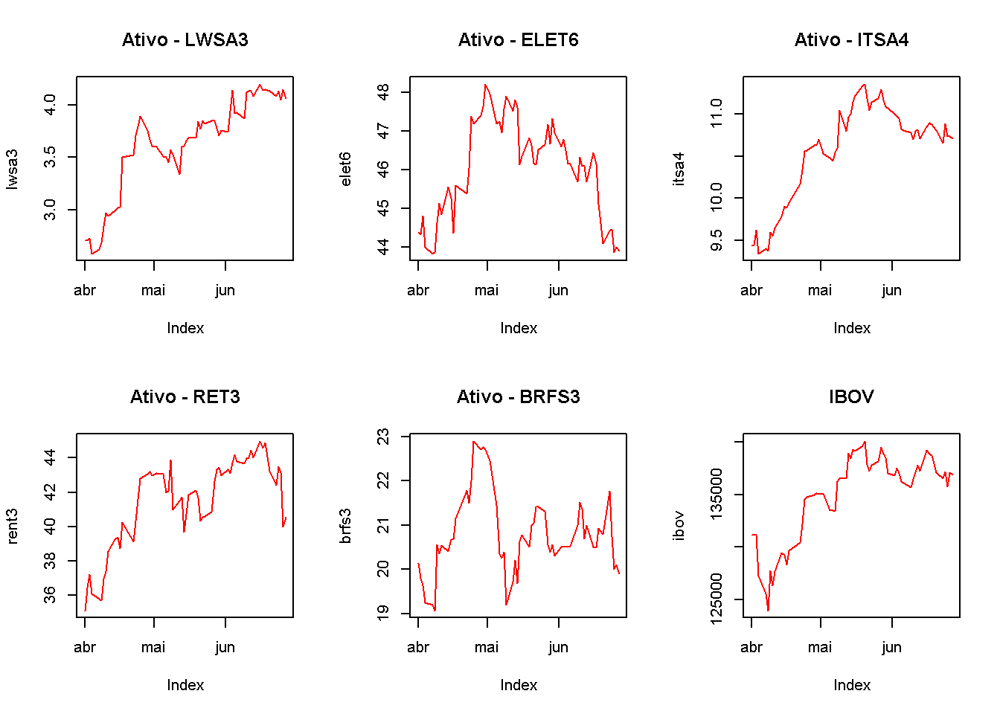
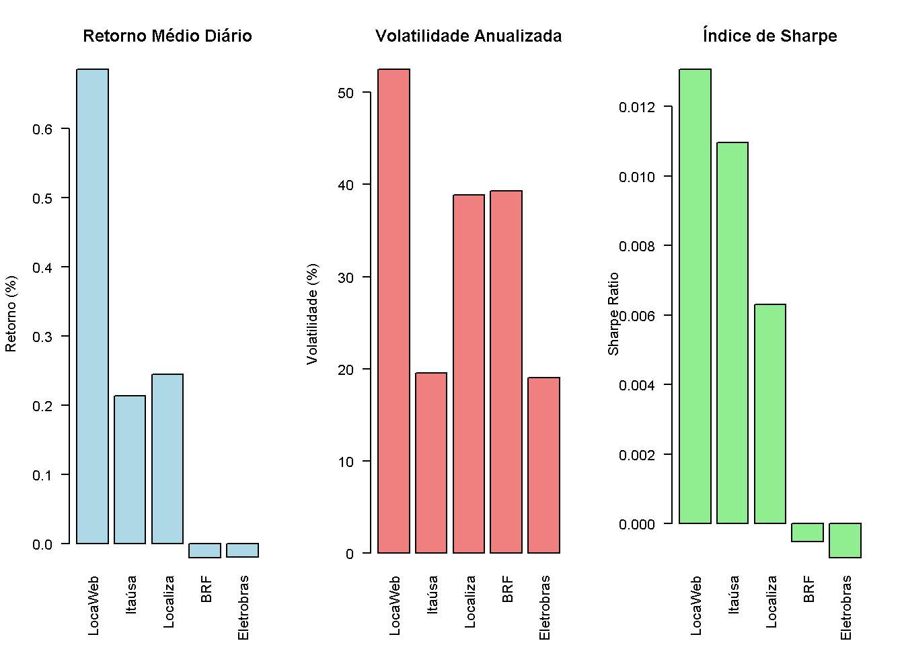
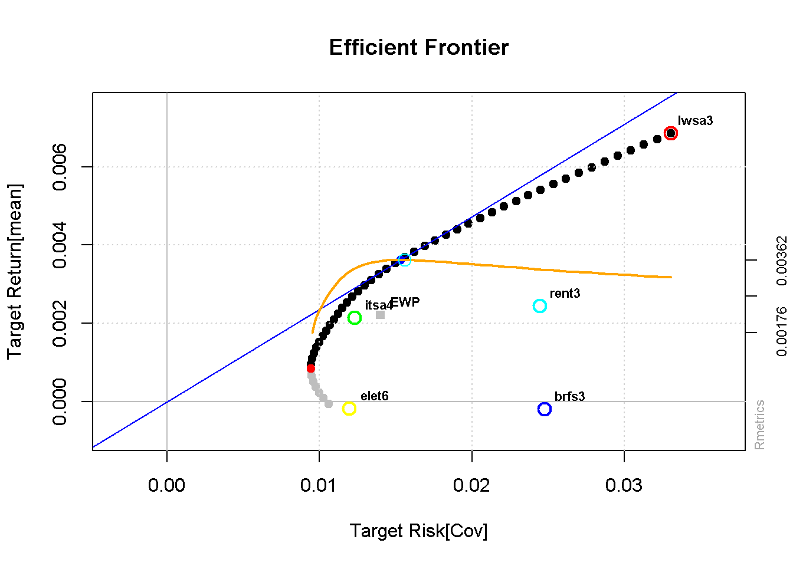
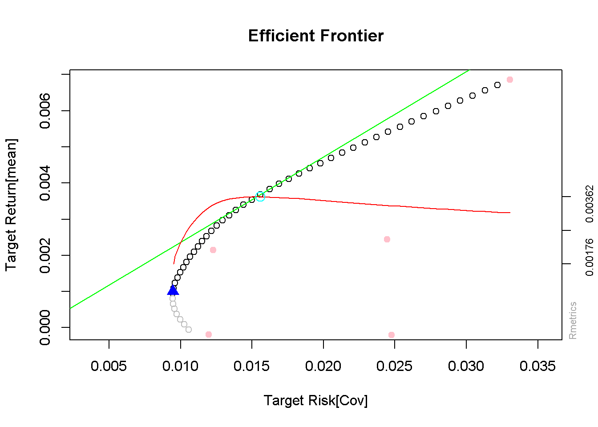

Code
# Datas de início e fim
dataini <- as.Date("2025-04-01")
datafim <- as.Date("2025-06-29")O relatório a seguir tem como objetivo apresentar um estudo sobre cinco ativos financeiros, buscando analisar o seu potencial de lucro, o comportamento no cenário econômico atual e, em especial, o nível de risco associado a cada um deles.
Este estudo é direcionado a investidores avessos ao risco (perfil conservador), cujo foco principal é a preservação de capital e a estabilidade nos retornos. Como explica Hal Varian (no livro Microeconomia: Uma Abordagem Moderna, Cap. 12) destaca que o investidor avesso ao risco prefere a certeza do valor esperado de sua riqueza em vez de apostar em alternativas incertas, mesmo que com possibilidade de maior retorno. Em outras palavras, a estabilidade tem mais utilidade para esse perfil do que a chance de ganhos elevados acompanhada de riscos significativos de perda.
Nesse sentido, a análise dos ativos busca identificar aqueles que, dentro da teoria moderna de finanças, apresentam a melhor relação risco-retorno, ou seja, a combinação de menor variância dos retornos (Markowitz) com perspectivas de retorno positivo. Assim, este relatório pretende oferecer ao investidor conservador uma visão fundamentada que auxilie na escolha racional e segura de investimentos diante da incerteza do mercado.
Organizando o ambiente:
# Datas de início e fim
dataini <- as.Date("2025-04-01")
datafim <- as.Date("2025-06-29")A LocaWeb ((lwsa3))é uma das principais empresas brasileiras de serviços de hospedagem, cloud computing e SaaS, posicionando-se como uma player relevante no setor de tecnologia. Empresas de tecnologia são altamente sensíveis ao ciclo econômico, mas se beneficiam de tendências estruturais de longo prazo, como a digitalização de negócios. A companhia tem enfrentado um ambiente competitivo intenso, com margens pressionadas pela guerra de preços e pela necessidade constante de inovação, o que eleva seu risco operacional. Seu alto endividamento para financiar aquisições e investimentos também é um ponto de atenção.
A Eletrobras (elet6) é uma das maiores empresas do setor elétrico da América Latina, atuando principalmente na geração e transmissão de energia. Trata-se de um setor essencial e perene, com receitas altamente previsíveis reguladas por contratos de longo prazo, o que confere maior estabilidade e menor risco ao ativo. Após sua privatização, a empresa busca ganhos de eficiência e redução de custos, potencialmente melhorando seus indicadores financeiros e a distribuição de dividendos.
A Itaúsa (itsa4) é uma das maiores holdings de investimento do Brasil, com uma carteira diversificada e focada em setores perenes, como financeiro (Itaú Unibanco), industrial (Alpargatas, Dexco) e de saúde (Hospital Albert Einstein). Esta diversificação confere resiliência aos resultados, alinhando-se à filosofia de investidores conservadores que buscam exposição a ativos de qualidade com menor volatilidade. A companhia é conhecida por sua disciplina capital e por ser uma histórica pagadora de dividendos sólidos.
A Localiza (rent3) é líder no setor de aluguel de veículos no Brasil, um segmento cíclico e sensível ao desempenho da economia, do crédito e do turismo. A empresa possui um modelo de negócio robusto, com vantagens de escala e uma gestão eficiente de sua frota, mas sofre pressão em cenários de juros altos, que elevam seu custo de capital. Seu endividamento é elevado, porém é considerado estrutural para financiar o crescimento da frota.
A BRF(brfs3) é uma gigante global do setor de proteínas, detentora de marcas icônicas como Sadia e Perdigão. O setor de alimentos é altamente competitivo e vulnerável a volatilidade nos custos de commodities (milho, soja) e a cenários macroeconômicos desfavoráveis, que impactam o poder de compra do consumidor. A empresa tem trabalhado para reduzir seu elevado endividamento

A análise técnica do ativo, construída com base em séries temporais de preços ajustados, utilizou um método clássico de identificação de pontos extremos de mercado — mínimos e máximos históricos — que servem como referência para a interpretação de tendências e a definição de suportes e resistências.
Mínimo representa o ponto em que o preço atingiu o seu valor mais baixo em determinado período. A marcação desse ponto permite identificar regiões onde a pressão compradora prevaleceu, funcionando como um suporte natural.
Máximo corresponde ao ponto em que o preço alcançou o valor mais alto, sugerindo áreas de resistência, onde a pressão vendedora foi dominante.
O código não apenas destaca esses pontos no gráfico, mas também traça uma linha entre eles, o que auxilia na visualização de uma tendência primária do ativo: quando a linha se inclina positivamente, sugere um viés de alta; quando inclinada negativamente, indica viés de baixa.
Essa metodologia dialoga com a Teoria de Dow, ao considerar que os preços se movimentam em tendências identificáveis e que os extremos de preço funcionam como marcos psicológicos do mercado. Todavia, por ser uma abordagem restrita a máximos e mínimos, deve ser complementada com indicadores técnicos adicionais (como médias móveis, RSI ou Bandas de Bollinger) e com a análise de volume, para confirmar a força da tendência.
Na prática, o objetivo é fornecer uma visualização intuitiva dos pontos críticos do ativo, permitindo que o investidor trace hipóteses sobre zonas de compra (próximas ao suporte) e de venda (próximas à resistência), sempre levando em consideração a relação risco-retorno associada.
library(tseries)
library(xts)Carregando pacotes exigidos: zoo
Anexando pacote: 'zoo'Os seguintes objetos são mascarados por 'package:base':
as.Date, as.Date.numeric
######################### Warning from 'xts' package ##########################
# #
# The dplyr lag() function breaks how base R's lag() function is supposed to #
# work, which breaks lag(my_xts). Calls to lag(my_xts) that you type or #
# source() into this session won't work correctly. #
# #
# Use stats::lag() to make sure you're not using dplyr::lag(), or you can add #
# conflictRules('dplyr', exclude = 'lag') to your .Rprofile to stop #
# dplyr from breaking base R's lag() function. #
# #
# Code in packages is not affected. It's protected by R's namespace mechanism #
# Set `options(xts.warn_dplyr_breaks_lag = FALSE)` to suppress this warning. #
# #
###############################################################################
Anexando pacote: 'xts'Os seguintes objetos são mascarados por 'package:dplyr':
first, lastlibrary(zoo)
plot_min_max <- function(serie, nome) {
datas <- index(serie)
preco <- coredata(serie)
min_idx <- which.min(preco)
max_idx <- which.max(preco)
data_min <- datas[min_idx]
preco_min <- preco[min_idx]
data_max <- datas[max_idx]
preco_max <- preco[max_idx]
plot(serie, main = paste("Preço de fechamento -", nome), col = "gray")
points(data_min, preco_min, col = "blue", pch = 17, cex = 1.5)
points(data_max, preco_max, col = "orange", pch = 17, cex = 1.5)
# Linha ligando mínimo e máximo
lines(c(data_min, data_max), c(preco_min, preco_max), col = "purple", lwd = 2, lty = 3)
legend("topleft", legend = c("Mínimo", "Máximo"),
col = c("blue", "orange", "purple"), pch = c(17, 17, NA), lty = c(NA, NA, 3), bty = "n")
}O ativo apresenta uma tendência indefinida, oscilando em um canal lateral, sem força compradora ou vendedora dominante. O suporte relevante está em R$ 5,80 e a resistência próxima em R$ 6,50 (dados de 27/06/2025).
Conclusão: o movimento lateral reflete incerteza dos investidores, indicando que o papel pode permanecer congestionado até a confirmação de rompimento. Para investidores avessos ao risco, a atratividade é baixa, já que o retorno potencial é limitado e o risco de rompimento desfavorável existe.
plot_min_max(lwsa3, "LWSA3")Pelo ponto de vista gráfico, a ação apresenta uma tendência de alta consistente, apoiada por sucessivos topos e fundos ascendentes. O suporte firme se encontra na região de R$ 44,00, enquanto a resistência imediata está em R$ 48,50 (dados de 27/06/2025). Conclusão: a configuração atrai investidores focados em retorno total (valorização + dividendos), pois o ativo mantém força compradora. Contudo, a proximidade da resistência exige atenção a sinais de reversão ou realização de lucros.
plot_min_max(elet6, "ELET6")Graficamente, a ação opera em uma tendência de alta moderada, mas de menor inclinação em relação a outros papéis do setor financeiro. O suporte se mostra consistente em R$ 9,90, com resistência no patamar de R$ 10,80 (dados de 27/06/2025).
Conclusão: o movimento sugere um ativo estável e com baixo risco relativo, adequado a investidores com perfil conservador. O potencial de valorização é limitado, mas a probabilidade de manter suporte torna a relação risco-retorno equilibrada.
plot_min_max(itsa4, "ITSA4")Pela análise técnica, o papel apresenta um movimento de consolidação após forte valorização anterior, caracterizando um período de descanso na tendência. O suporte principal está localizado em R$ 62,00, enquanto a resistência relevante aparece em R$ 68,00 (dados de 27/06/2025).
Conclusão: a ação indica força acumulada em suporte, sugerindo possível continuidade da alta em caso de rompimento da resistência. Para investidores moderados e agressivos, o ativo apresenta atratividade, desde que observada a relação risco-retorno em caso de correção.
plot_min_max(rent3, "RENT3")Graficamente, o ativo se encontra em momento de transição, refletindo indecisão entre compradores e vendedores. O suporte imediato está em R$ 20,00, enquanto a resistência se posiciona em R$ 21,80 (dados de 27/06/2025). Conclusão: a ação aguarda um catalisador de mercado (como divulgação de resultados ou fatores macroeconômicos) para definir a direção. O cenário atual não favorece movimentos expressivos de curto prazo, sendo mais indicado a investidores pacientes ou com perfil de observação.
plot_min_max(brfs3, "BRFS3")Ao calcularmos a média e o desvio padrão dos preços, buscamos compreender a dispersão dos valores em torno do seu ponto central. O coeficiente de variação, por sua vez, expressa essa dispersão de forma relativa à média, indicando em termos percentuais o quanto o preço de um ativo oscila no período analisado. Dessa forma, ele se torna um indicador eficiente para avaliar o risco relativo: quanto maior for o coeficiente, maior tende a ser a volatilidade do ativo, refletindo um nível mais elevado de incerteza.
Media.lwsa3 <- mean(lwsa3); Desvio.lwsa3 <- sd(lwsa3)
Media.elet6 <- mean(elet6); Desvio.elet6 <- sd(elet6)
Media.itsa4 <- mean(itsa4); Desvio.itsa4 <- sd(itsa4)
Media.rent3 <- mean(rent3); Desvio.rent3 <- sd(rent3)
Media.brfs3 <- mean(brfs3); Desvio.brfs3 <- sd(brfs3)
Media.ibov <- mean(ibov); Desvio.ibov <- sd(ibov)
# Cria a tabela com os ativos, média e desvio padrão
tabela_resumo <- tibble::tibble(
Ativo = c("LWSA3", "ELET6", "ITSA4", "RENT3", "BRFS3", "IBOV"),
Média = c(Media.lwsa3, Media.elet6, Media.itsa4, Media.rent3 ,Media.brfs3, Media.ibov),
`Desvio Padrão` = c(Desvio.lwsa3,Desvio.elet6,Desvio.itsa4,Desvio.rent3,Desvio.brfs3 ,Desvio.ibov)
)
# Exibe a tabela com kable (bonita para HTML, PDF, etc.)
knitr::kable(tabela_resumo, digits = 4, caption = "Média e Desvio Padrão dos Ativos")%>%
kable_styling(bootstrap_options = c("striped", "hover", "condensed", "responsive"),
full_width = FALSE)| Ativo | Média | Desvio Padrão |
|---|---|---|
| LWSA3 | 3.6225 | 0.4608 |
| ELET6 | 46.0307 | 1.2628 |
| ITSA4 | 10.5798 | 0.5732 |
| RENT3 | 41.4160 | 2.5784 |
| BRFS3 | 20.7445 | 0.8726 |
| IBOV | 134947.8667 | 4059.6616 |
Com os resultados obtidos, observa-se que o ativo LWSA3 apresentou o maior coeficiente de variação, atingindo 12,72%, enquanto o menor valor foi registrado pela ELET6, com 2,74%. Em seguida, destacam-se BRFS3 (4,21%), ITSA4 (5,42%) e RENT3 (6,23%). Para efeito de comparação, o Ibovespa apresentou um coeficiente de 3,01%.
#==MEDIDA DE RISCO dos PREÇOS (%) ================
CVlwsa3 <- sd(lwsa3)/mean(lwsa3)*100
CVelet6 <- sd(elet6)/mean(elet6)*100
CVitsa4 <- sd(itsa4)/mean(itsa4)*100
CVrent3 <- sd(rent3)/mean(rent3)*100
CVbrfs3 <- sd(brfs3)/mean(brfs3)*100
CVibov <- sd(ibov)/mean(ibov)*100
# Cria a tabela com os ativos, média e desvio padrão
tabela_cvpreco <- tibble::tibble(
Ativo = c("LWSA3", "ELET6", "ITSA4", "RENT3", "BRFS3", "IBOV"),
`Coeficiente de Variação` = c(CVlwsa3,CVelet6, CVitsa4,CVrent3, CVbrfs3, CVibov),)
# Reordena os ativos deixando IBOV por último
tabela_cvpreco$Ativo <- factor(tabela_cvpreco$Ativo,
levels = c("LWSA3", "ELET6", "ITSA4", "RENT3", "BRFS3", "IBOV"))
# Exibe a tabela
knitr::kable(tabela_cvpreco, digits = 2, caption = "Coeficiente de Variação (Preço) dos Ativos")%>%
kable_styling(bootstrap_options = c("striped", "hover", "condensed", "responsive"),
full_width = FALSE)| Ativo | Coeficiente de Variação |
|---|---|
| LWSA3 | 12.72 |
| ELET6 | 2.74 |
| ITSA4 | 5.42 |
| RENT3 | 6.23 |
| BRFS3 | 4.21 |
| IBOV | 3.01 |
Ao analisarmos a média e o desvio padrão dos retornos, buscamos compreender de forma mais consistente a volatilidade e o risco dos ativos. O coeficiente obtido a partir dos retornos é mais representativo da incerteza: quanto maior o coeficiente, maior tende a ser a volatilidade, indicando maior incerteza. Quando o coeficiente é negativo, isso evidencia não apenas alta volatilidade, mas também uma tendência de perda.
### RETORNO ##############################
rlwsa3 <- diff(log(lwsa3))
relet6 <- diff(log(elet6))
ritsa4 <- diff(log(itsa4))
rrent3 <- diff(log(rent3))
rbrfs3 <- diff(log(brfs3))
ribov <- diff(log(ibov))
# Gráficos de Retorno
par(mfrow = c(2, 3))
plot(rlwsa3, main = "Retorno LWSA3", col = "pink")
plot(relet6, main = "Retorno ELET6", col = "pink")
plot(ritsa4, main = "Retorno ITSA4", col = "pink")
plot(rrent3, main = "Retorno RENT3", col = "pink")
plot(rbrfs3, main = "Retorno BRFS3", col = "pink")
plot(ribov, main = "Retorno IBOV", col = "red")Ao analisarmos a média e o desvio-padrão dos retornos, buscamos compreender de forma mais consistente a volatilidade e o risco de cada ativo. O coeficiente de variação, obtido a partir dos retornos, é um indicador mais fiel da incerteza: quanto maior o coeficiente, maior tende a ser a volatilidade relativa, sinalizando maior risco. Quando o coeficiente é negativo, isso evidencia não apenas alta instabilidade, mas também uma tendência de perda.
Os resultados observados foram:
LWSA3: retorno médio 0,685%, desvio-padrão 0,0330, coeficiente 4,82
ELET6: retorno médio -0,0188%, desvio-padrão 0,0120, coeficiente -63,64
ITSA4: retorno médio 0,2139%, desvio-padrão 0,0123, coeficiente 5,75
RENT3: retorno médio 0,2446%, desvio-padrão 0,0245, coeficiente 10,00
BRFS3: retorno médio -0,0203%, desvio-padrão 0,0248, coeficiente -121,97
IBOV: retorno médio 0,0723%, desvio-padrão 0,0098, coeficiente 13,60
A BRFS3 se destaca por apresentar coeficiente extremamente elevado e negativo, refletindo forte volatilidade associada a uma tendência de perda. Em seguida aparece a ELET6, também com coeficiente negativo expressivo. Entre os ativos com coeficientes positivos, a LWSA3 apresentou o menor valor (4,82), sugerindo maior estabilidade relativa, seguida por ITSA4 (5,75) e RENT3 (10,00), que apesar de mais volátil, ainda demonstrou retorno positivo.
Em comparação, o IBOV apresentou retorno médio de 0,0723% e coeficiente de variação 13,60, ou seja, mais volátil em termos relativos do que ativos como LWSA3 e ITSA4. Isso indica que determinados ativos individuais podem oferecer uma relação risco-retorno mais favorável do que o próprio índice de mercado, reforçando a importância da seleção criteriosa de ativos dentro de uma estratégia de diversificação.
# Média do retorno (%) e desvio
rlwsa3 <- diff(log(lwsa3)); mrlwsa3 <- mean(rlwsa3)*100; Drlwsa3 <- sd(rlwsa3);CVlwsa3 <- Drlwsa3 / mrlwsa3 * 100
relet6 <- diff(log(elet6)); mrelet6 <- mean(relet6)*100; Drelet6 <- sd(relet6);cvelet6 <- Drelet6 / mrelet6 * 100
ritsa4 <- diff(log(itsa4)); mritsa4 <- mean(ritsa4)*100; Dritsa4 <- sd(ritsa4);cvitsa4 <- Dritsa4 / mritsa4 * 100
rrent3 <- diff(log(rent3)); mrrent3 <- mean(rrent3)*100; Drrent3 <- sd(rrent3);cvrent3 <- Drrent3 / mrrent3 * 100
rbrfs3 <- diff(log(brfs3)); mrbrfs3 <- mean(rbrfs3)*100; Drbrfs3 <- sd(rbrfs3);cvbrfs3 <- Drbrfs3 / mrbrfs3 * 100
ribov <- diff(log(ibov)); mribov <- mean(ribov)*100; Dribov <- sd(ribov);cvibov <- Dribov / mribov * 100
# tabela com os dados de retorno
tabela_retornos <- tibble::tibble(
Ativo = c("LWSA3", "ELET6", "ITSA4", "RENT3", "BRFS3", "IBOV"),
`Média dos Retornos (%)` = c(mrlwsa3, mrelet6, mritsa4, mrrent3, mrbrfs3, mribov),
`Desvio Padrão dos Retornos` = c(Drlwsa3, Drelet6, Dritsa4, Drrent3 , Drbrfs3, Dribov ),
`Coeficiente de Variação` = c(CVlwsa3, cvelet6, cvitsa4, cvrent3, cvbrfs3, cvibov ))
# Exibe a tabela formatada
knitr::kable(tabela_retornos, digits = 6, caption = "Média e Desvio Padrão dos Retornos Diários")%>%
kable_styling(bootstrap_options = c("striped", "hover", "condensed", "responsive"),
full_width = FALSE)| Ativo | Média dos Retornos (%) | Desvio Padrão dos Retornos | Coeficiente de Variação |
|---|---|---|---|
| LWSA3 | 0.685143 | 0.033056 | 4.824629 |
| ELET6 | -0.018818 | 0.011975 | -63.638925 |
| ITSA4 | 0.213936 | 0.012297 | 5.747933 |
| RENT3 | 0.244635 | 0.024470 | 10.002478 |
| BRFS3 | -0.020319 | 0.024783 | -121.969777 |
| IBOV | 0.072345 | 0.009840 | 13.602083 |
A análise dos histogramas possibilita avaliar o formato da distribuição dos preços e retornos dos ativos. Em alguns casos, como ITSA4 e BRFS3, observa-se um comportamento que se aproxima do formato de sino característico da distribuição normal, embora ainda apresentem sinais de assimetria e caudas alongadas, o que indica desvios da normalidade perfeita.
Para confirmar essas evidências visuais, aplicou-se o teste de Jarque-Bera, que avalia se uma série segue ou não a distribuição normal, com base na hipótese nula de normalidade (H₀). Os resultados mostraram que:
Ativos como LWSA3 (p=0,0195), ITSA4 (p=0,0154), RENT3 (p=0,0272) e o IBOV (p=0,0066) rejeitaram a hipótese nula ao nível de 5% de significância, evidenciando que seus retornos não seguem a distribuição normal.
Já ELET6 (p=0,1748) e BRFS3 (p=0,1631) não rejeitaram a hipótese nula, indicando que não há evidências estatísticas suficientes para descartar a normalidade de suas distribuições.
Portanto, ainda que alguns histogramas sugiram proximidade com a forma normal, o teste estatístico confirma que a maioria dos ativos analisados não segue rigorosamente uma distribuição normal. Esse resultado é relevante para a gestão de risco, pois a não normalidade dos retornos implica maior cautela na aplicação de modelos que assumem distribuição normal, especialmente na mensuração de volatilidade e no cálculo de Value at Risk (VaR).
# Todos os Histogramas
#Preço
par(mfrow = c(2, 3))
hist(lwsa3, nclass = 30, col = "cadetblue", main = "Histograma LWSA3", xlab = "Preço")
hist(elet6, nclass = 30, col = "cadetblue", main = "Histograma ELET5", xlab = "Preço")
hist(itsa4, nclass = 30, col = "cadetblue", main = "Histograma ITSA4", xlab = "Preço")
hist(rent3, nclass = 30, col = "cadetblue", main = "Histograma RENT3", xlab = "Preço")
hist(brfs3, nclass = 30, col = "cadetblue", main = "Histograma BRFS3", xlab = "Preço")
hist(ibov, nclass = 30, col = "red", main = "Histograma IBOV", xlab = "Preço") #Retorno
par(mfrow = c(2, 3))
hist(rlwsa3, nclass = 30, col = "lightcoral", main = "Hist Ret LWSA3", xlab = "Retorno")
hist(relet6, nclass = 30, col = "lightcoral", main = "Hist Ret ELET5", xlab = "Retorno")
hist(ritsa4, nclass = 30, col = "lightcoral", main = "Hist Ret ITSA4", xlab = "Retorno")
hist(rrent3, nclass = 30, col = "lightcoral", main = "Hist Ret RENT34", xlab = "Retorno")
hist(rbrfs3, nclass = 30, col = "lightcoral", main = "Hist Ret BRFS3", xlab = "Retorno")
hist(ribov, nclass = 30, col = "purple", main = "Hist Ret IBOV", xlab = "Retorno")#Tabela Jarque Bera e P-Valor
lwsa3jb <- jarqueberaTest(lwsa3)@test$statistic
lwsa3jbp <- jarqueberaTest(lwsa3)@test$p.value
elet6jb <- jarqueberaTest(elet6)@test$statistic
elet6jbp <- jarqueberaTest(elet6)@test$p.value
itsa4jb <- jarqueberaTest(itsa4)@test$statistic
itsa4jbp <- jarqueberaTest(itsa4)@test$p.value
rent3jb <- jarqueberaTest(rent3)@test$statistic
rent3jbp <- jarqueberaTest(rent3)@test$p.value
brfs3jb <- jarqueberaTest(brfs3)@test$statistic
brfs3jbp <- jarqueberaTest(brfs3)@test$p.value
ibovjb <- jarqueberaTest(ibov)@test$statistic
ibovjbp <- jarqueberaTest(ibov)@test$p.value
# Cria a tabela com os ativos
tabela_jb <- tibble::tibble(
Ativo = c("LWSA3", "ELET6", "ITSA4", "RENT3", "BRFS3", "IBOV"),
`Jarque-Bera` = c(lwsa3jb, elet6jb, itsa4jb, rent3jb, brfs3jb, ibovjb),
`P-Valor` = c(lwsa3jbp, elet6jbp, itsa4jbp, rent3jbp, brfs3jbp, ibovjbp))
# Reordena os ativos deixando IBOV por último
tabela_jb$Ativo <- factor(tabela_jb$Ativo,
levels = c("LWSA3", "ELET6", "ITSA4", "RENT3", "BRFS3", "IBOV"))
# Exibe a tabela
knitr::kable(tabela_jb, digits = 4, caption = "Teste de Normalidade (Jarque-Bera)")%>%
kable_styling(bootstrap_options = c("striped", "hover", "condensed", "responsive"),
full_width = FALSE)| Ativo | Jarque-Bera | P-Valor |
|---|---|---|
| LWSA3 | 7.8704 | 0.0195 |
| ELET6 | 3.4881 | 0.1748 |
| ITSA4 | 8.3430 | 0.0154 |
| RENT3 | 7.2057 | 0.0272 |
| BRFS3 | 3.6266 | 0.1631 |
| IBOV | 10.0549 | 0.0066 |
Por definição, a volatilidade representa a incerteza inerente aos retornos de um investimento. Quanto maior for a volatilidade de um ativo, maiores serão suas oscilações de preço, refletindo um maior grau de imprevisibilidade.
A obra “O Desafio dos Deuses” explora como, apesar de a relação entre seres humanos e risco ser ancestral e profundamente enraizada, nossas reações comportamentais diante da incerteza continuam complexas e multifacetadas. Neste contexto, a volatilidade surge como uma ferramenta fundamental para quantificar esse risco, permitindo aos investidores transformar a abstração da incerteza em métricas tangíveis.
Compreender a volatilidade capacita o investidor a tomar decisões mais alinhadas com sua tolerância ao risco individual. Por exemplo, um indivíduo naturalmente avesso ao risco, ao dominar este conceito, conscientemente evitará investimentos com alta volatilidade, reconhecendo que seu perfil psicológico e financeiro não suportaria as flutuações abruptas características destes ativos. Esta consciência previne escolhas inadequadas que potencialmente levariam a decisões emocionais precipitadas durante períodos de instabilidade do mercado.
Desta forma, a volatilidade transcende seu significado estatístico para tornar-se um ponte entre a psicologia do investidor e a alocação racional de capital, funcionando como um filtro crucial na seleção de investimentos compatíveis com a verdadeira tolerância ao risco de cada indivíduo.
O estudo do comportamento individual é estudada na teoria da escolha do consumidor, que analisa como indivíduos alocam recursos para maximizar sua utilidade diante de restrições orçamentárias. o autor Hal Varian, em seus estudos sobre escolha intertemporal, descreve como as decisões de consumo e poupança são influenciadas pela taxa de juros, que determina o custo de adiar ou antecipar o consumo. Nesse contexto, o indivíduo compara o consumo presente e futuro utilizando conceitos como valor presente, avaliando como diferentes taxas de juros alteram sua restrição orçamentária intertemporal. Além disso, quando há incerteza sobre retornos futuros, a função de utilidade sob risco e a análise probabilística, como a função de densidade acumulada, ajudam a explicar como diferentes perfis de investidores tomam decisões entre opções seguras (renda fixa) e arriscadas (ações), considerando retorno esperado e tolerância ao risco , logo podemos observar que a depender do apetiti para o risco do investidor havera uma utilidade que é maximizada de acordo com o o cenerio que melhor se encaixa com o apetite para o risco do investidor a densidade da probabilidade é útil nesse momento
Drlwsa3 <- sd(rlwsa3); Vollwsa3 <- (Drlwsa3*100)*sqrt(252)
Drelet6 <- sd(relet6); Volelet6 <- (Drelet6*100)*sqrt(252)
Dritsa4 <- sd(ritsa4); Volitsa4 <- (Dritsa4*100)*sqrt(252)
Drbbdc4 <- sd(rrent3); Volrent3 <- (Drrent3*100)*sqrt(252)
Drmrfg3 <- sd(rbrfs3); Volbrfs3 <- (Drbrfs3*100)*sqrt(252)
Dribov <- sd(ribov); Volibov <- (Dribov*100)*sqrt(252)
# Cria a tabela com os ativos, média e desvio padrão
tabela_vol <- tibble::tibble(
Ativo = c("LWSA3", "ELET6", "ITSA4", "RENT3", "BRFS3", "IBOV"),
Volatilidade = c(Vollwsa3, Volelet6, Volitsa4, Volrent3, Volbrfs3, Volibov),)
# Reordena os ativos deixando IBOV por último
tabela_vol$Ativo <- factor(tabela_vol$Ativo,
levels = c("LWSA3", "ELET6", "ITSA4", "RENT3", "BRFS3", "IBOV"))
# Exibe a tabela
knitr::kable(tabela_vol, digits = 2, caption = "Coeficiente de Variação (Preço) dos Ativos")%>%
kable_styling(bootstrap_options = c("striped", "hover", "condensed", "responsive"),
full_width = FALSE)| Ativo | Volatilidade |
|---|---|
| LWSA3 | 52.47 |
| ELET6 | 19.01 |
| ITSA4 | 19.52 |
| RENT3 | 38.84 |
| BRFS3 | 39.34 |
| IBOV | 15.62 |
Ao analisarmos a volatilidade dos ativos em comparação com o Ibovespa — principal índice de referência do mercado brasileiro, que apresentou volatilidade de 15,62% — observamos que todos os ativos da carteira registram níveis superiores ao benchmark.
A LocaWeb (LWSA3) se destaca como a mais volátil, com 52,47%, evidenciando risco mais de três vezes superior ao do mercado. Em seguida aparecem BRF (BRFS3) com 39,34% e Localiza (RENT3) com 38,84%, também muito acima do índice. Já Eletrobras (ELET6) e Itaúsa (ITSA4), embora tenham registrado as menores volatilidades entre os ativos (19,01% e 19,52%, respectivamente), ainda assim se situam acima da volatilidade do IBOV.
Esses resultados mostram que os investidores expostos a essa carteira assumem níveis de risco significativamente maiores do que aqueles de uma carteira diversificada que replica o índice de mercado. Isso exige maior tolerância à volatilidade e reforça a importância de alinhar as expectativas de retorno com o perfil de risco assumido.
O comportamento individual é analisado pela teoria da escolha do consumidor, que estuda como as pessoas alocam seus recursos para maximizar a utilidade, respeitando limitações orçamentárias. Hal Varian, em seus estudos sobre escolha intertemporal, mostra que as decisões de consumo e poupança são influenciadas pela taxa de juros, que representa o custo de antecipar ou postergar o consumo. Nesse contexto, o indivíduo compara o consumo presente e futuro usando conceitos como valor presente, avaliando como diferentes taxas de juros afetam sua restrição orçamentária ao longo do tempo.
Quando os retornos futuros são incertos, a função de utilidade sob risco e ferramentas probabilísticas, como a função de densidade acumulada, ajudam a compreender como investidores com perfis distintos escolhem entre opções seguras, como renda fixa, e opções mais arriscadas, como ações, considerando o retorno esperado e sua tolerância ao risco.
A análise estatística dos retornos financeiros pode ser ilustrada usando desvios-padrão (DP) para entender a dispersão dos retornos:
O intervalo de 1 DP cobre cerca de 68% dos retornos esperados.
O intervalo de 2 DPs abrange aproximadamente 95% dos retornos.
O intervalo de 3 DPs inclui quase 99,7% dos retornos possíveis (regra empírica da normal).
O intervalo de 2,5 DPs serve como comparação adicional.
Ao aplicar essa análise aos ativos LWSA3, ELET6, ITSA4, RENT3 e BRFS3, bem como ao Ibovespa, é possível visualizar graficamente:
Qual ativo apresenta maior dispersão (volatilidade) em torno da média.
Se os retornos estão concentrados próximos da média ou mais espalhados.
Como o Ibovespa, por ser um índice diversificado, tende a ter menor dispersão em comparação com ativos individuais.
# novos ("lwsa3.sa", "elet6.sa", "itsa4.sa", "rent3.sa", "brfs3.sa")
## LWSA3
Media.lwsa3[1] 3.6225Desvio.lwsa3[1] 0.4607533par(mfrow = c(2, 2), oma = c(0, 0, 3, 0))
# 1 DP
x <- seq(Media.lwsa3 - Desvio.lwsa3, Media.lwsa3 + Desvio.lwsa3, length = 60)
y <- dnorm(x, Media.lwsa3, Desvio.lwsa3)
plot(x, y, type = "l", lwd = 2, col = "red", main = "Intervalo de 1 DP")
# 2 DP
x <- seq(Media.lwsa3 - 2 * Desvio.lwsa3, Media.lwsa3 + 2 * Desvio.lwsa3, length = 60)
y <- dnorm(x, Media.lwsa3, Desvio.lwsa3)
plot(x, y, type = "l", lwd = 2, col = "red", main = "Intervalo de 2 DP")
# 3 DP
x <- seq(Media.lwsa3 - 3 * Desvio.lwsa3, Media.lwsa3 + 3 * Desvio.lwsa3, length = 60)
y <- dnorm(x, Media.lwsa3, Desvio.lwsa3)
plot(x, y, type = "l", lwd = 2, col = "red", main = "Intervalo de 3 DP")
# Faixa maior
x <- seq(Media.lwsa3 - 2.5 * Desvio.lwsa3, Media.lwsa3 + 2.5 * Desvio.lwsa3, length = 60)
y <- dnorm(x, Media.lwsa3, Desvio.lwsa3)
plot(x, y, type = "l", lwd = 2, col = "red", main = "Intervalo mais amplo")
# Título geral
mtext("LWSA3", outer = TRUE, cex = 1.5)## ELET6
Media.elet6[1] 46.03067Desvio.elet6[1] 1.262844par(mfrow = c(2, 2), oma = c(0, 0, 3, 0))
x <- seq(Media.elet6 - Desvio.elet6, Media.elet6 + Desvio.elet6, length = 60)
y <- dnorm(x, Media.elet6, Desvio.elet6)
plot(x, y, type = "l", lwd = 2, col = "red", main = "Intervalo de 1 DP")
x <- seq(Media.elet6 - 2 * Desvio.elet6, Media.elet6 + 2 * Desvio.elet6, length = 60)
y <- dnorm(x, Media.elet6, Desvio.elet6)
plot(x, y, type = "l", lwd = 2, col = "red", main = "Intervalo de 2 DP")
x <- seq(Media.elet6 - 3 * Desvio.elet6, Media.elet6 + 3 * Desvio.elet6, length = 60)
y <- dnorm(x, Media.elet6, Desvio.elet6)
plot(x, y, type = "l", lwd = 2, col = "red", main = "Intervalo de 3 DP")
x <- seq(Media.elet6 - 2.5 * Desvio.elet6, Media.elet6 + 2.5 * Desvio.elet6, length = 60)
y <- dnorm(x, Media.elet6, Desvio.elet6)
plot(x, y, type = "l", lwd = 2, col = "red", main = "Intervalo mais amplo")
mtext("ELET6", outer = TRUE, cex = 1.5)## ITSA4
Media.itsa4[1] 10.57983Desvio.itsa4[1] 0.5732172par(mfrow = c(2, 2), oma = c(0, 0, 3, 0))
x <- seq(Media.itsa4 - Desvio.itsa4, Media.itsa4 + Desvio.itsa4, length = 60)
y <- dnorm(x, Media.itsa4, Desvio.itsa4)
plot(x, y, type = "l", lwd = 2, col = "red", main = "Intervalo de 1 DP")
x <- seq(Media.itsa4 - 2 * Desvio.itsa4, Media.itsa4 + 2 * Desvio.itsa4, length = 60)
y <- dnorm(x, Media.itsa4, Desvio.itsa4)
plot(x, y, type = "l", lwd = 2, col = "red", main = "Intervalo de 2 DP")
x <- seq(Media.itsa4 - 3 * Desvio.itsa4, Media.itsa4 + 3 * Desvio.itsa4, length = 60)
y <- dnorm(x, Media.itsa4, Desvio.itsa4)
plot(x, y, type = "l", lwd = 2, col = "red", main = "Intervalo de 3 DP")
x <- seq(Media.itsa4 - 2.5 * Desvio.itsa4, Media.itsa4 + 2.5 * Desvio.itsa4, length = 60)
y <- dnorm(x, Media.itsa4, Desvio.itsa4)
plot(x, y, type = "l", lwd = 2, col = "red", main = "Intervalo mais amplo")
mtext("ITSA4", outer = TRUE, cex = 1.5)## RENT3
Media.rent3[1] 41.416Desvio.rent3[1] 2.578418par(mfrow = c(2, 2), oma = c(0, 0, 3, 0))
x <- seq(Media.rent3 - Desvio.rent3, Media.rent3 + Desvio.rent3, length = 60)
y <- dnorm(x, Media.rent3, Desvio.rent3)
plot(x, y, type = "l", lwd = 2, col = "red", main = "Intervalo de 1 DP")
x <- seq(Media.rent3 - 2 * Desvio.rent3, Media.rent3 + 2 * Desvio.rent3, length = 60)
y <- dnorm(x, Media.rent3, Desvio.rent3)
plot(x, y, type = "l", lwd = 2, col = "red", main = "Intervalo de 2 DP")
x <- seq(Media.rent3 - 3 * Desvio.rent3, Media.rent3 + 3 * Desvio.rent3, length = 60)
y <- dnorm(x, Media.rent3, Desvio.rent3)
plot(x, y, type = "l", lwd = 2, col = "red", main = "Intervalo de 3 DP")
x <- seq(Media.rent3 - 2.5 * Desvio.rent3, Media.rent3 + 2.5 * Desvio.rent3, length = 60)
y <- dnorm(x, Media.rent3, Desvio.rent3)
plot(x, y, type = "l", lwd = 2, col = "red", main = "Intervalo mais amplo")
mtext("RENT3", outer = TRUE, cex = 1.5)## BRFS3
Media.brfs3[1] 20.7445Desvio.brfs3[1] 0.8725833par(mfrow = c(2, 2), oma = c(0, 0, 3, 0))
x <- seq(Media.brfs3 - Desvio.brfs3, Media.brfs3 + Desvio.brfs3, length = 60)
y <- dnorm(x, Media.brfs3, Desvio.brfs3)
plot(x, y, type = "l", lwd = 2, col = "red", main = "Intervalo de 1 DP")
x <- seq(Media.brfs3 - 2 * Desvio.brfs3, Media.brfs3 + 2 * Desvio.brfs3, length = 60)
y <- dnorm(x, Media.brfs3, Desvio.brfs3)
plot(x, y, type = "l", lwd = 2, col = "red", main = "Intervalo de 2 DP")
x <- seq(Media.brfs3 - 3 * Desvio.brfs3, Media.brfs3 + 3 * Desvio.brfs3, length = 60)
y <- dnorm(x, Media.brfs3, Desvio.brfs3)
plot(x, y, type = "l", lwd = 2, col = "red", main = "Intervalo de 3 DP")
x <- seq(Media.brfs3 - 2.5 * Desvio.brfs3, Media.brfs3 + 2.5 * Desvio.brfs3, length = 60)
y <- dnorm(x, Media.brfs3, Desvio.brfs3)
plot(x, y, type = "l", lwd = 2, col = "red", main = "Intervalo mais amplo")
mtext("BRFS3", outer = TRUE, cex = 1.5)## IBOV (mantido)
Media.ibov[1] 134947.9Desvio.ibov[1] 4059.662par(mfrow = c(2, 2), oma = c(0, 0, 3, 0))
x <- seq(Media.ibov - Desvio.ibov, Media.ibov + Desvio.ibov, length = 60)
y <- dnorm(x, Media.ibov, Desvio.ibov)
plot(x, y, type = "l", lwd = 2, col = "red", main = "Intervalo de 1 DP")
x <- seq(Media.ibov - 2 * Desvio.ibov, Media.ibov + 2 * Desvio.ibov, length = 60)
y <- dnorm(x, Media.ibov, Desvio.ibov)
plot(x, y, type = "l", lwd = 2, col = "red", main = "Intervalo de 2 DP")
x <- seq(Media.ibov - 3 * Desvio.ibov, Media.ibov + 3 * Desvio.ibov, length = 60)
y <- dnorm(x, Media.ibov, Desvio.ibov)
plot(x, y, type = "l", lwd = 2, col = "red", main = "Intervalo de 3 DP")
x <- seq(Media.ibov - 2.5 * Desvio.ibov, Media.ibov + 2.5 * Desvio.ibov, length = 60)
y <- dnorm(x, Media.ibov, Desvio.ibov)
plot(x, y, type = "l", lwd = 2, col = "red", main = "Intervalo mais amplo")
mtext("IBOV", outer = TRUE, cex = 1.5)# LWSA3
pnorm(Media.lwsa3 + Desvio.lwsa3, Media.lwsa3, Desvio.lwsa3) -
pnorm(Media.lwsa3 - Desvio.lwsa3, Media.lwsa3, Desvio.lwsa3)[1] 0.6826895pnorm(Media.lwsa3 + 2 * Desvio.lwsa3, Media.lwsa3, Desvio.lwsa3) -
pnorm(Media.lwsa3 - 2 * Desvio.lwsa3, Media.lwsa3, Desvio.lwsa3)[1] 0.9544997pnorm(Media.lwsa3 + 3 * Desvio.lwsa3, Media.lwsa3, Desvio.lwsa3) -
pnorm(Media.lwsa3 - 3 * Desvio.lwsa3, Media.lwsa3, Desvio.lwsa3)[1] 0.9973002# ELET6
pnorm(Media.elet6 + Desvio.elet6, Media.elet6, Desvio.elet6) -
pnorm(Media.elet6 - Desvio.elet6, Media.elet6, Desvio.elet6)[1] 0.6826895pnorm(Media.elet6 + 2 * Desvio.elet6, Media.elet6, Desvio.elet6) -
pnorm(Media.elet6 - 2 * Desvio.elet6, Media.elet6, Desvio.elet6)[1] 0.9544997pnorm(Media.elet6 + 3 * Desvio.elet6, Media.elet6, Desvio.elet6) -
pnorm(Media.elet6 - 3 * Desvio.elet6, Media.elet6, Desvio.elet6)[1] 0.9973002# ITSA4
pnorm(Media.itsa4 + Desvio.itsa4, Media.itsa4, Desvio.itsa4) -
pnorm(Media.itsa4 - Desvio.itsa4, Media.itsa4, Desvio.itsa4)[1] 0.6826895pnorm(Media.itsa4 + 2 * Desvio.itsa4, Media.itsa4, Desvio.itsa4) -
pnorm(Media.itsa4 - 2 * Desvio.itsa4, Media.itsa4, Desvio.itsa4)[1] 0.9544997pnorm(Media.itsa4 + 3 * Desvio.itsa4, Media.itsa4, Desvio.itsa4) -
pnorm(Media.itsa4 - 3 * Desvio.itsa4, Media.itsa4, Desvio.itsa4)[1] 0.9973002# RENT3
pnorm(Media.rent3 + Desvio.rent3, Media.rent3, Desvio.rent3) -
pnorm(Media.rent3 - Desvio.rent3, Media.rent3, Desvio.rent3)[1] 0.6826895pnorm(Media.rent3 + 2 * Desvio.rent3, Media.rent3, Desvio.rent3) -
pnorm(Media.rent3 - 2 * Desvio.rent3, Media.rent3, Desvio.rent3)[1] 0.9544997pnorm(Media.rent3 + 3 * Desvio.rent3, Media.rent3, Desvio.rent3) -
pnorm(Media.rent3 - 3 * Desvio.rent3, Media.rent3, Desvio.rent3)[1] 0.9973002# BRFS3
pnorm(Media.brfs3 + Desvio.brfs3, Media.brfs3, Desvio.brfs3) -
pnorm(Media.brfs3 - Desvio.brfs3, Media.brfs3, Desvio.brfs3)[1] 0.6826895pnorm(Media.brfs3 + 2 * Desvio.brfs3, Media.brfs3, Desvio.brfs3) -
pnorm(Media.brfs3 - 2 * Desvio.brfs3, Media.brfs3, Desvio.brfs3)[1] 0.9544997pnorm(Media.brfs3 + 3 * Desvio.brfs3, Media.brfs3, Desvio.brfs3) -
pnorm(Media.brfs3 - 3 * Desvio.brfs3, Media.brfs3, Desvio.brfs3)[1] 0.9973002# IBOV
pnorm(Media.ibov + Desvio.ibov, Media.ibov, Desvio.ibov) -
pnorm(Media.ibov - Desvio.ibov, Media.ibov, Desvio.ibov)[1] 0.6826895pnorm(Media.ibov + 2 * Desvio.ibov, Media.ibov, Desvio.ibov) -
pnorm(Media.ibov - 2 * Desvio.ibov, Media.ibov, Desvio.ibov)[1] 0.9544997pnorm(Media.ibov + 3 * Desvio.ibov, Media.ibov, Desvio.ibov) -
pnorm(Media.ibov - 3 * Desvio.ibov, Media.ibov, Desvio.ibov)[1] 0.9973002A análise dos ativos no período considerado evidencia um comportamento relativamente consistente, com retornos estáveis e perfil de risco que pode ser interessante para investidores com perfil averso ao risco. A avaliação da volatilidade anualizada permitiu organizar os ativos do menos arriscado ao mais arriscado, resultando no seguinte ranking:
ELET6
ITSA4
RENT3
BRFS3
LWSA3
O destaque vai para a ELET6, que apresentou a menor volatilidade entre os ativos analisados, demonstrando maior previsibilidade e menor exposição a oscilações bruscas de mercado. É importante observar, no entanto, que a média dos retornos logarítmicos da ELET6 foi negativa (-0,0188%), indicando que, embora seja o ativo mais seguro, ele não proporcionou retorno positivo no período considerado.
A análise das estatísticas básicas, considerando média dos preços, desvio padrão e coeficiente de variação, reforça a consistência dos resultados ao longo do período. A média dos retornos logarítmicos indica que, apesar da variabilidade, os ativos com maior potencial de retorno ajustado ao risco, como ITSA4 e RENT3, podem ser mais interessantes para investidores que buscam equilíbrio entre segurança e rentabilidade.
Para referência, o Ibovespa (IBOV) é utilizado como benchmark, por ser um índice diversificado que reflete o desempenho do mercado de ações brasileiro. Segundo Bovespa (2025), o IBOV fornece uma medida de risco relativa menor devido à diversificação, servindo como parâmetro para comparação com ativos individuais.
Para o investidor moderado, que valoriza estabilidade, a alocação em ativos como **ELET6 e ITSA4** pode oferecer maior previsibilidade de resultados. Por outro lado, ativos como **LWSA3 e BRFS3**, com volatilidade mais elevada, demandam atenção redobrada, já que apresentam maior incerteza quanto aos retornos futuros.
Portanto, embora todos os ativos analisados tenham riscos inerentes à renda variável, a diferença de volatilidade entre eles permite a construção de estratégias diferenciadas de investimento, alinhadas a diferentes perfis de tolerância ao risco, reforçando a importância de combinar medidas estatísticas com análise de retorno logarítmico e histórico de preços.
::: {.cell}
```{.r .cell-code}
# Carregar pacotes necessários
library(tseries)
library(dplyr)
# Definir parâmetros
ativos <- c("lwsa3.sa", "elet6.sa", "itsa4.sa", "rent3.sa", "brfs3.sa")
nomes_ativos <- c("LocaWeb", "Eletrobras", "Itaúsa", "Localiza", "BRF")
# Criar data.frame para armazenar resultados
resultados <- data.frame(
Ativo = character(),
Retorno_Medio = numeric(),
Volatilidade_Anualizada = numeric(),
stringsAsFactors = FALSE
)
# Loop pelos ativos
for (i in 1:length(ativos)) {
ativo <- ativos[i]
nome_ativo <- nomes_ativos[i]
# Baixar os preços de fechamento
preco <- get.hist.quote(ativo, quote = "Close", start = dataini, end = datafim)
# Calcular retornos logarítmicos
retornos <- diff(log(preco))
retornos <- na.omit(retornos)
# Calcular estatísticas dos retornos
m_retorno <- mean(retornos)
# Calcular volatilidade anualizada
d_retorno <- sd(retornos)
volatilidade_anual <- (d_retorno * 100) * sqrt(252)
# Armazenar resultados
resultados <- rbind(resultados, data.frame(
Ativo = nome_ativo,
Retorno_Medio = m_retorno * 100,
Volatilidade_Anualizada = volatilidade_anual
))
}
```
::: {.cell-output .cell-output-stdout}
```
time series ends 2025-06-27
time series ends 2025-06-27
time series ends 2025-06-27
time series ends 2025-06-27
time series ends 2025-06-27
```
:::
```{.r .cell-code}
# Calcular índice de Sharpe (assumindo taxa livre de risco zero)
resultados$Sharpe_Ratio <- resultados$Retorno_Medio / resultados$Volatilidade_Anualizada
# Criar rankings
ranking_retorno <- resultados %>%
arrange(desc(Retorno_Medio)) %>%
mutate(Ranking_Retorno = row_number())
ranking_volatilidade <- resultados %>%
arrange(Volatilidade_Anualizada) %>%
mutate(Ranking_Volatilidade = row_number())
ranking_sharpe <- resultados %>%
arrange(desc(Sharpe_Ratio)) %>%
mutate(Ranking_Sharpe = row_number())
# Combinar rankings
rankings_completos <- ranking_retorno %>%
select(Ativo, Ranking_Retorno) %>%
left_join(ranking_volatilidade %>% select(Ativo, Ranking_Volatilidade), by = "Ativo") %>%
left_join(ranking_sharpe %>% select(Ativo, Ranking_Sharpe), by = "Ativo") %>%
left_join(resultados, by = "Ativo")
# Ordenar por Ranking de Sharpe (melhor performance ajustada ao risco)
rankings_completos <- rankings_completos %>%
arrange(Ranking_Sharpe)
# Exibir tabela de rankings
cat("=== RANKING DE ATIVOS ===\n")
```
::: {.cell-output .cell-output-stdout}
```
=== RANKING DE ATIVOS ===
```
:::
```{.r .cell-code}
cat("(Ordenado pelo melhor Índice de Sharpe)\n\n")
```
::: {.cell-output .cell-output-stdout}
```
(Ordenado pelo melhor Índice de Sharpe)
```
:::
```{.r .cell-code}
print(rankings_completos, row.names = FALSE)
```
::: {.cell-output .cell-output-stdout}
```
Ativo Ranking_Retorno Ranking_Volatilidade Ranking_Sharpe Retorno_Medio
LocaWeb 1 5 1 0.68514290
Itaúsa 3 2 2 0.21393551
Localiza 2 3 3 0.24463504
BRF 5 4 4 -0.02031889
Eletrobras 4 1 5 -0.01881771
Volatilidade_Anualizada Sharpe_Ratio
52.47415 0.0130567706
19.52067 0.0109594325
38.84423 0.0062978470
39.34164 -0.0005164729
19.01034 -0.0009898671
```
:::
```{.r .cell-code}
# Visualização gráfica dos rankings
par(mfrow = c(1, 3), mar = c(5, 4, 4, 2) + 0.1)
# Gráfico 1: Retorno Médio
barplot(rankings_completos$Retorno_Medio,
names.arg = rankings_completos$Ativo,
main = "Retorno Médio Diário",
ylab = "Retorno (%)",
col = "lightblue",
las = 2)
# Gráfico 2: Volatilidade Anualizada
barplot(rankings_completos$Volatilidade_Anualizada,
names.arg = rankings_completos$Ativo,
main = "Volatilidade Anualizada",
ylab = "Volatilidade (%)",
col = "lightcoral",
las = 2)
# Gráfico 3: Índice de Sharpe
barplot(rankings_completos$Sharpe_Ratio,
names.arg = rankings_completos$Ativo,
main = "Índice de Sharpe",
ylab = "Sharpe Ratio",
col = "lightgreen",
las = 2)
```
::: {.cell-output-display}
{width=672}
:::
```{.r .cell-code}
# Restaurar configuração padrão
par(mfrow = c(1, 1))
# Criar scatter plot retorno vs volatilidade
plot(rankings_completos$Volatilidade_Anualizada,
rankings_completos$Retorno_Medio,
main = "Relação Retorno vs Volatilidade",
xlab = "Volatilidade Anualizada (%)",
ylab = "Retorno Médio Diário (%)",
pch = 19, col = "blue", cex = 2)
# Adicionar rótulos
text(rankings_completos$Volatilidade_Anualizada,
rankings_completos$Retorno_Medio,
labels = rankings_completos$Ativo,
pos = 3, cex = 0.8)
# Adicionar linha de referência (volatilidade do Ibovespa)
abline(v = 15.62, col = "red", lty = 2)
text(15.62, max(rankings_completos$Retorno_Medio),
"Ibovespa (15.62%)", pos = 2, col = "red")
```
::: {.cell-output-display}
{width=672}
:::
:::# Datas de início e fim
dataini <- as.Date("2025-04-01")
datafim <- as.Date("2025-06-29")# Baixando os dados dos 5 ativos
#install.packages("tseries")
lwsa3 <- get.hist.quote("lwsa3.sa", quote = "Close", start = dataini, end = datafim);length(lwsa3)time series ends 2025-06-27[1] 60elet6 <- get.hist.quote("elet6.sa", quote = "Close", start = dataini, end = datafim);length(elet6)time series ends 2025-06-27[1] 60itsa4 <- get.hist.quote("itsa4.sa", quote = "Close", start = dataini, end = datafim);length(itsa4)time series ends 2025-06-27[1] 60rent3 <- get.hist.quote("rent3.sa", quote = "Close", start = dataini, end = datafim);length(rent3)time series ends 2025-06-27[1] 60brfs3 <- get.hist.quote("brfs3.sa", quote = "Close", start = dataini, end = datafim);length(brfs3)time series ends 2025-06-27[1] 60# Removendo valores ausentes
lwsa3 <- na.omit(lwsa3)
elet6 <- na.omit(elet6)
itsa4 <- na.omit(itsa4)
rent3 <- na.omit(rent3)
brfs3 <- na.omit(brfs3)
# Verificando quantidade de observações e visualizando os dados
par(mfrow = c(2, 3))
plot(lwsa3, main = "Ativo - LWSA3")
plot(elet6, main = "Ativo - ELET6")
plot(itsa4, main = "Ativo - ITSA4")
plot(rent3, main = "Ativo - RET3")
plot(brfs3, main = "Ativo - BRFS3")
Ativo 1: Locaweb(lwsa3): A LocaWeb é uma das principais empresas brasileiras de serviços de hospedagem, cloud computing e SaaS, posicionando-se como uma player relevante no setor de tecnologia. Empresas de tecnologia são altamente sensíveis ao ciclo econômico, mas se beneficiam de tendências estruturais de longo prazo, como a digitalização de negócios. A companhia tem enfrentado um ambiente competitivo intenso, com margens pressionadas pela guerra de preços e pela necessidade constante de inovação, o que eleva seu risco operacional. Seu alto endividamento para financiar aquisições e investimentos também é um ponto de atenção.
Ativo2: A Eletrobras(elet6) é uma das maiores empresas do setor elétrico da América Latina, atuando principalmente na geração e transmissão de energia. Trata-se de um setor essencial e perene, com receitas altamente previsíveis reguladas por contratos de longo prazo, o que confere maior estabilidade e menor risco ao ativo. Após sua privatização, a empresa busca ganhos de eficiência e redução de custos, potencialmente melhorando seus indicadores financeiros e a distribuição de dividendos.
Ativo 3: Itaúsa(itsa4) : A Itaúsa é uma das maiores holdings de investimento do Brasil, com uma carteira diversificada e focada em setores perenes, como financeiro (Itaú Unibanco), industrial (Alpargatas, Dexco) e de saúde (Hospital Albert Einstein). Esta diversificação confere resiliência aos resultados, alinhando-se à filosofia de investidores conservadores que buscam exposição a ativos de qualidade com menor volatilidade.
Ativo 4: Localiza(rent3): Localiza (RENT3) A Localiza é líder no setor de aluguel de veículos no Brasil, um segmento cíclico e sensível ao desempenho da economia, do crédito e do turismo. A empresa possui um modelo de negócio robusto, com vantagens de escala e uma gestão eficiente de sua frota, mas sofre pressão em cenários de juros altos, que elevam seu custo de capital. Seu endividamento é elevado, porém é considerado estrutural para financiar o crescimento da frota.
Ativo 5:BRF(brfs3): A análise fornecida pelo usuário já é um modelo excelente. Segue uma versão reformulada para variar a redação, mantendo o conteúdo essencial: A BRF é uma gigante global do setor de proteínas, detentora de marcas icônicas como Sadia e Perdigão. O setor de alimentos é altamente competitivo e vulnerável a volatilidade nos custos de commodities (milho, soja) e a cenários macroeconômicos desfavoráveis, que impactam o poder de compra do consumidor.
A análise da correlação estatística entre os ativos é um dos pilares da diversificação e se conecta diretamente ao conceito de fronteira eficiente desenvolvido por Harry Markowitz (1952). Além das medidas tradicionais como a média, o desvio-padrão e o coeficiente de variação dos retornos, a correlação mostra como os ativos se relacionam entre si e com a carteira. Quando a correlação é negativa, existe uma relação inversa: enquanto um ativo tende a cair, outro tende a se valorizar ou permanecer estável, o que reduz a volatilidade total da carteira. Já correlações positivas indicam que os ativos se movem na mesma direção — ambos sobem ou caem juntos — e, quanto mais próximas de +1, mais forte é essa relação.
Markowitz demonstrou que, ao combinar ativos com correlação baixa ou negativa, é possível deslocar a fronteira eficiente para a esquerda, isto é, obter o mesmo retorno esperado com menor risco ou maior retorno para o mesmo risco. Dessa forma, a diversificação não é apenas uma intuição prática, mas um princípio formalizado pela teoria moderna de portfólios: ao reduzir o risco não sistemático por meio de correlações imperfeitas, o investidor consegue construir carteiras mais estáveis e eficientes em termos de risco-retorno.
Alta correlação positiva entre LWSA3-ITSA4 (0.83) e LWSA3-RENT3 (0.86), indicando que esses pares tendem a se mover juntos, oferecendo menos benefícios de diversificação.
Correlações moderadas entre a maioria dos outros pares, sugerindo oportunidades de diversificação.
De acordo com a teoria de Markowitz, a diversificação eficiente requer:
Baixas ou negativas correlações entre ativos
Consideração de retornos esperados e variâncias individuais
Cálculo de covariâncias para estimar o risco da carteira
library(GetBCBData)
library(fBasics)
Correl=cbind(lwsa3, elet6, itsa4, rent3, brfs3);Correl Close.lwsa3 Close.elet6 Close.itsa4 Close.rent3 Close.brfs3
2025-04-01 2.71 44.38 9.44 35.10 20.14
2025-04-02 2.71 44.32 9.45 36.45 19.80
2025-04-03 2.73 44.80 9.62 37.24 19.64
2025-04-04 2.58 44.00 9.34 36.10 19.25
2025-04-07 2.62 43.82 9.40 35.81 19.20
2025-04-08 2.69 43.86 9.38 35.70 19.06
2025-04-09 2.84 44.63 9.60 36.97 20.56
2025-04-10 2.97 45.13 9.55 37.40 20.35
2025-04-11 2.94 44.84 9.65 38.57 20.54
2025-04-14 2.99 45.56 9.78 39.26 20.41
2025-04-15 3.02 45.26 9.91 39.40 20.67
2025-04-16 3.03 44.36 9.89 38.75 20.68
2025-04-17 3.50 45.60 9.95 40.25 21.15
2025-04-22 3.52 45.38 10.17 39.15 21.78
2025-04-23 3.71 46.05 10.34 40.36 21.49
2025-04-24 3.79 47.39 10.56 41.60 22.01
2025-04-25 3.89 47.19 10.57 42.81 22.90
2025-04-28 3.76 47.41 10.63 43.06 22.70
2025-04-29 3.67 47.65 10.63 43.18 22.75
2025-04-30 3.61 48.23 10.70 42.96 22.70
2025-05-02 3.60 47.97 10.53 43.10 22.46
2025-05-05 3.51 47.19 10.48 43.06 21.44
2025-05-06 3.50 47.25 10.45 42.00 20.35
2025-05-07 3.45 46.97 10.54 42.09 20.26
2025-05-08 3.57 47.58 10.60 43.90 20.39
2025-05-09 3.53 47.91 11.05 41.00 19.20
2025-05-12 3.34 47.52 10.80 41.50 19.71
2025-05-13 3.60 47.81 10.97 41.74 20.20
2025-05-14 3.61 47.63 11.00 39.71 19.68
2025-05-15 3.66 46.14 11.14 40.75 20.62
2025-05-16 3.69 46.35 11.22 41.84 20.78
2025-05-19 3.69 46.84 11.34 42.10 20.50
2025-05-20 3.84 46.63 11.36 41.70 21.00
2025-05-21 3.77 46.17 11.19 40.36 21.04
2025-05-22 3.85 46.14 11.05 40.56 21.42
2025-05-23 3.82 46.53 11.14 40.59 21.42
2025-05-26 3.85 46.66 11.19 40.85 21.31
2025-05-27 3.85 47.18 11.29 42.65 20.56
2025-05-28 3.78 46.68 11.17 43.32 20.39
2025-05-29 3.71 47.34 11.09 43.44 20.56
2025-05-30 3.76 46.97 11.07 42.96 20.30
2025-06-02 3.74 46.60 11.00 43.31 20.50
2025-06-03 3.94 46.79 10.98 43.12 20.50
2025-06-04 4.14 46.50 10.95 43.70 20.50
2025-06-05 3.92 46.15 10.83 44.20 20.50
2025-06-06 3.93 46.15 10.81 43.80 20.52
2025-06-09 3.87 45.70 10.78 43.66 21.00
2025-06-10 4.12 46.33 10.70 43.99 21.51
2025-06-11 4.13 46.09 10.80 44.00 21.36
2025-06-12 4.13 46.09 10.82 44.46 20.69
2025-06-13 4.08 45.69 10.71 44.02 21.00
2025-06-16 4.20 46.44 10.85 44.99 20.50
2025-06-17 4.14 46.16 10.90 44.60 20.49
2025-06-18 4.15 45.11 10.88 44.88 20.92
2025-06-20 4.13 44.10 10.81 43.26 20.79
2025-06-23 4.08 44.42 10.66 42.41 21.76
2025-06-24 4.13 44.46 10.89 43.51 20.75
2025-06-25 4.05 43.86 10.74 43.15 20.01
2025-06-26 4.15 43.99 10.74 40.01 20.10
2025-06-27 4.06 43.89 10.71 40.55 19.90names(Correl)<-c("lwsa3", "elet6", "itsa4", "rent3", "brfs3"); class(Correl)[1] "zoo"#Transformar a tabela em Data.frame para Aplicar a CORREL
Correl=cbind.data.frame(lwsa3, elet6, itsa4, rent3, brfs3); names(Correl) <- c("lwsa3", "elet6", "itsa4", "rent3", "brfs3");Correl lwsa3 elet6 itsa4 rent3 brfs3
2025-04-01 2.71 44.38 9.44 35.10 20.14
2025-04-02 2.71 44.32 9.45 36.45 19.80
2025-04-03 2.73 44.80 9.62 37.24 19.64
2025-04-04 2.58 44.00 9.34 36.10 19.25
2025-04-07 2.62 43.82 9.40 35.81 19.20
2025-04-08 2.69 43.86 9.38 35.70 19.06
2025-04-09 2.84 44.63 9.60 36.97 20.56
2025-04-10 2.97 45.13 9.55 37.40 20.35
2025-04-11 2.94 44.84 9.65 38.57 20.54
2025-04-14 2.99 45.56 9.78 39.26 20.41
2025-04-15 3.02 45.26 9.91 39.40 20.67
2025-04-16 3.03 44.36 9.89 38.75 20.68
2025-04-17 3.50 45.60 9.95 40.25 21.15
2025-04-22 3.52 45.38 10.17 39.15 21.78
2025-04-23 3.71 46.05 10.34 40.36 21.49
2025-04-24 3.79 47.39 10.56 41.60 22.01
2025-04-25 3.89 47.19 10.57 42.81 22.90
2025-04-28 3.76 47.41 10.63 43.06 22.70
2025-04-29 3.67 47.65 10.63 43.18 22.75
2025-04-30 3.61 48.23 10.70 42.96 22.70
2025-05-02 3.60 47.97 10.53 43.10 22.46
2025-05-05 3.51 47.19 10.48 43.06 21.44
2025-05-06 3.50 47.25 10.45 42.00 20.35
2025-05-07 3.45 46.97 10.54 42.09 20.26
2025-05-08 3.57 47.58 10.60 43.90 20.39
2025-05-09 3.53 47.91 11.05 41.00 19.20
2025-05-12 3.34 47.52 10.80 41.50 19.71
2025-05-13 3.60 47.81 10.97 41.74 20.20
2025-05-14 3.61 47.63 11.00 39.71 19.68
2025-05-15 3.66 46.14 11.14 40.75 20.62
2025-05-16 3.69 46.35 11.22 41.84 20.78
2025-05-19 3.69 46.84 11.34 42.10 20.50
2025-05-20 3.84 46.63 11.36 41.70 21.00
2025-05-21 3.77 46.17 11.19 40.36 21.04
2025-05-22 3.85 46.14 11.05 40.56 21.42
2025-05-23 3.82 46.53 11.14 40.59 21.42
2025-05-26 3.85 46.66 11.19 40.85 21.31
2025-05-27 3.85 47.18 11.29 42.65 20.56
2025-05-28 3.78 46.68 11.17 43.32 20.39
2025-05-29 3.71 47.34 11.09 43.44 20.56
2025-05-30 3.76 46.97 11.07 42.96 20.30
2025-06-02 3.74 46.60 11.00 43.31 20.50
2025-06-03 3.94 46.79 10.98 43.12 20.50
2025-06-04 4.14 46.50 10.95 43.70 20.50
2025-06-05 3.92 46.15 10.83 44.20 20.50
2025-06-06 3.93 46.15 10.81 43.80 20.52
2025-06-09 3.87 45.70 10.78 43.66 21.00
2025-06-10 4.12 46.33 10.70 43.99 21.51
2025-06-11 4.13 46.09 10.80 44.00 21.36
2025-06-12 4.13 46.09 10.82 44.46 20.69
2025-06-13 4.08 45.69 10.71 44.02 21.00
2025-06-16 4.20 46.44 10.85 44.99 20.50
2025-06-17 4.14 46.16 10.90 44.60 20.49
2025-06-18 4.15 45.11 10.88 44.88 20.92
2025-06-20 4.13 44.10 10.81 43.26 20.79
2025-06-23 4.08 44.42 10.66 42.41 21.76
2025-06-24 4.13 44.46 10.89 43.51 20.75
2025-06-25 4.05 43.86 10.74 43.15 20.01
2025-06-26 4.15 43.99 10.74 40.01 20.10
2025-06-27 4.06 43.89 10.71 40.55 19.90attach(Correl)Os seguintes objetos são mascarados _por_ .GlobalEnv:
brfs3, elet6, itsa4, lwsa3, rent3class(Correl)[1] "data.frame"#Cáculo do Coeficiente de Correlação
# Pearson: Variáveis Numéricas e Paramétricas)
library(fBasics)
Corr01=correlationTest(lwsa3, elet6, method=c("pearson"));Corr01
Title:
Pearson's Correlation Test
Test Results:
PARAMETER:
Degrees of Freedom: 58
SAMPLE ESTIMATES:
Correlation: 0.3062
STATISTIC:
t: 2.4493
P VALUE:
Alternative Two-Sided: 0.01736
Alternative Less: 0.9913
Alternative Greater: 0.008678
CONFIDENCE INTERVAL:
Two-Sided: 0.0566, 0.5197
Less: -1, 0.4886
Greater: 0.0981, 1par=mflow=c(1,1)
plot(lwsa3, elet6 , main="Correlação Xi,Xj")
abline(lm(lwsa3~elet6), col="red", lwd=3)##
Corr02=correlationTest(lwsa3, itsa4, method=c("pearson"));Corr02
Title:
Pearson's Correlation Test
Test Results:
PARAMETER:
Degrees of Freedom: 58
SAMPLE ESTIMATES:
Correlation: 0.8306
STATISTIC:
t: 11.358
P VALUE:
Alternative Two-Sided: 0.0000000000000002247
Alternative Less: 1
Alternative Greater: < 0.00000000000000022
CONFIDENCE INTERVAL:
Two-Sided: 0.7308, 0.8956
Less: -1, 0.887
Greater: 0.7496, 1par=mflow=c(1,1)
plot(lwsa3, itsa4 , main="Correlação Xi,Xj")
abline(lm(lwsa3~itsa4), col="red", lwd=3)##
Corr03=correlationTest(lwsa3, rent3, method=c("pearson"));Corr03
Title:
Pearson's Correlation Test
Test Results:
PARAMETER:
Degrees of Freedom: 58
SAMPLE ESTIMATES:
Correlation: 0.8649
STATISTIC:
t: 13.1207
P VALUE:
Alternative Two-Sided: < 0.00000000000000022
Alternative Less: 1
Alternative Greater: < 0.00000000000000022
CONFIDENCE INTERVAL:
Two-Sided: 0.7829, 0.9173
Less: -1, 0.9105
Greater: 0.7985, 1par=mflow=c(1,1)
plot(lwsa3, rent3 , main="Correlação Xi,Xj")
abline(lm(lwsa3~rent3), col="red", lwd=3)##
Corr04=correlationTest(lwsa3, brfs3, method=c("pearson"));Corr04
Title:
Pearson's Correlation Test
Test Results:
PARAMETER:
Degrees of Freedom: 58
SAMPLE ESTIMATES:
Correlation: 0.4015
STATISTIC:
t: 3.3384
P VALUE:
Alternative Two-Sided: 0.001476
Alternative Less: 0.9993
Alternative Greater: 0.0007382
CONFIDENCE INTERVAL:
Two-Sided: 0.1643, 0.5948
Less: -1, 0.5671
Greater: 0.2046, 1par=mflow=c(1,1)
plot(lwsa3, brfs3 , main="Correlação Xi,Xj")
abline(lm(lwsa3~brfs3), col="red", lwd=3)#Matriz de correlação (5 Ativos)
matriz_cor <- cor(Correl, method = "pearson")
print(matriz_cor) lwsa3 elet6 itsa4 rent3 brfs3
lwsa3 1.0000000 0.3061631 0.8305694 0.8648669 0.4014734
elet6 0.3061631 1.0000000 0.5702220 0.5261140 0.4055757
itsa4 0.8305694 0.5702220 1.0000000 0.7658076 0.2566449
rent3 0.8648669 0.5261140 0.7658076 1.0000000 0.4235261
brfs3 0.4014734 0.4055757 0.2566449 0.4235261 1.0000000cor(Correl) lwsa3 elet6 itsa4 rent3 brfs3
lwsa3 1.0000000 0.3061631 0.8305694 0.8648669 0.4014734
elet6 0.3061631 1.0000000 0.5702220 0.5261140 0.4055757
itsa4 0.8305694 0.5702220 1.0000000 0.7658076 0.2566449
rent3 0.8648669 0.5261140 0.7658076 1.0000000 0.4235261
brfs3 0.4014734 0.4055757 0.2566449 0.4235261 1.0000000library(corrplot)corrplot 0.95 loadedcorrplot(matriz_cor, method = "color", addCoef.col = "black")#install.packages("corrplot")# Carregar pacotes necessários
library(timeSeries)Carregando pacotes exigidos: timeDate
Anexando pacote: 'timeSeries'O seguinte objeto é mascarado por 'package:zoo':
time<-O seguinte objeto é mascarado por 'package:dplyr':
lagOs seguintes objetos são mascarados por 'package:graphics':
lines, pointslibrary(fPortfolio)Carregando pacotes exigidos: fAssetslibrary(GetBCBData)
library(fBasics)
# ----------------------------
# 1. Definição dos ativos
# ----------------------------
ativos <- c("lwsa3", "elet6", "itsa4", "rent3", "brfs3")
# ----------------------------
# 2. Construção da base
# ----------------------------
Basico <- data.frame(na.omit(merge(lwsa3,elet6,itsa4,rent3,brfs3)))
names(Basico) <- ativos
# Salvar base em .txt
write.table(Basico, file = "Basico.txt")
# ----------------------------
# 3. Leitura e transformação
# ----------------------------
dados <- read.table("Basico.txt", header = TRUE)
dados <- timeSeries(dados)
# ----------------------------
# 4. Cálculo dos retornos
# ----------------------------
Retornos <- returns(dados)
# Visualizar correlação entre os ativos
cor(Retornos, use = "complete.obs") lwsa3 elet6 itsa4 rent3 brfs3
lwsa3 1.0000000 0.48129180 0.35315616 0.2875301 0.28717352
elet6 0.4812918 1.00000000 0.42239803 0.3190584 0.03815527
itsa4 0.3531562 0.42239803 1.00000000 0.1597745 -0.04471393
rent3 0.2875301 0.31905840 0.15977447 1.0000000 0.23704600
brfs3 0.2871735 0.03815527 -0.04471393 0.2370460 1.00000000# ----------------------------
# 5. Fronteira eficiente
# ----------------------------
fronteira <- portfolioFrontier(Retornos)
# Plotar fronteira eficiente
frontierPlot(fronteira, auto = FALSE)
# ----------------------------
# 6. Inclusão de pontos de interesse
# ----------------------------
points(0.0365, -0.0027, pch = 19, cex = 1.5, col = "green")
points(0.0203, -0.0002, pch = 19, cex = 1.5, col = "green")
points(0.0144, 0.0049, pch = 19, cex = 1.5, col = "green")
points(0.0237, 0.0074, pch = 19, cex = 1.5, col = "red")O princípio da otimização de carteiras segundo Markowitz baseia-se na ideia de que os investidores buscam maximizar o retorno esperado de seus investimentos, ao mesmo tempo em que minimizam o risco associado. A tarefa de otimizar uma carteira pode ser descrita de duas formas complementares:
Maximização do retorno esperado, sujeita a um nível específico de risco definido pelo investidor;
Minimização do risco (variância), sujeita a um nível de retorno desejado.
em que:
a variância da carteira, representando o risco total;
o retorno esperado da carteira;
os resultados são, respectivamente, os níveis de risco e retorno que o investidor deseja atingir.
As carteiras resultantes desse processo são conhecidas como carteiras de Markowitz, sendo consideradas eficientes por maximizarem o retorno esperado para um dado nível de risco. O conjunto de todas as carteiras eficientes forma a Fronteira Eficiente, que representa o trade-off ideal entre risco e retorno para diferentes combinações de ativos.
Em termos gráficos, essas carteiras são ilustradas no plano Retorno Esperado vs. Desvio-Padrão, permitindo ao investidor visualizar a relação entre risco e retorno de forma clara, como descrito por Copeland (Capítulo 5) e detalhado por Damodaran em sua abordagem prática de análise de portfólio.

A análise da carteira mostra a aplicação prática da teoria de Markowitz: com pesos iguais entre os ativos, o portfólio apresentou retorno esperado de 0,22 e desvio-padrão de 1,38, ambos superiores em eficiência quando comparados aos ativos isolados. Embora alguns ativos apresentem retornos negativos, a diversificação permitiu reduzir a volatilidade global e alcançar retorno positivo, comprovando o efeito da correlação imperfeita. Assim, a carteira aproxima-se da fronteira eficiente, ponto no qual o investidor racional consegue maximizar o retorno sujeito ao risco ou minimizar o risco para um retorno desejado. Na prática, isso significa avaliar como cada novo ativo impacta a variância da carteira e buscar o ponto ótimo de tangência, onde se obtém o equilíbrio entre risco e rentabilidade.
library(GetBCBData)
library(fBasics)
Basico<-data.frame(na.omit(merge(lwsa3, elet6, itsa4, rent3, brfs3)));Basico Close.lwsa3 Close.elet6 Close.itsa4 Close.rent3 Close.brfs3
2025-04-01 2.71 44.38 9.44 35.10 20.14
2025-04-02 2.71 44.32 9.45 36.45 19.80
2025-04-03 2.73 44.80 9.62 37.24 19.64
2025-04-04 2.58 44.00 9.34 36.10 19.25
2025-04-07 2.62 43.82 9.40 35.81 19.20
2025-04-08 2.69 43.86 9.38 35.70 19.06
2025-04-09 2.84 44.63 9.60 36.97 20.56
2025-04-10 2.97 45.13 9.55 37.40 20.35
2025-04-11 2.94 44.84 9.65 38.57 20.54
2025-04-14 2.99 45.56 9.78 39.26 20.41
2025-04-15 3.02 45.26 9.91 39.40 20.67
2025-04-16 3.03 44.36 9.89 38.75 20.68
2025-04-17 3.50 45.60 9.95 40.25 21.15
2025-04-22 3.52 45.38 10.17 39.15 21.78
2025-04-23 3.71 46.05 10.34 40.36 21.49
2025-04-24 3.79 47.39 10.56 41.60 22.01
2025-04-25 3.89 47.19 10.57 42.81 22.90
2025-04-28 3.76 47.41 10.63 43.06 22.70
2025-04-29 3.67 47.65 10.63 43.18 22.75
2025-04-30 3.61 48.23 10.70 42.96 22.70
2025-05-02 3.60 47.97 10.53 43.10 22.46
2025-05-05 3.51 47.19 10.48 43.06 21.44
2025-05-06 3.50 47.25 10.45 42.00 20.35
2025-05-07 3.45 46.97 10.54 42.09 20.26
2025-05-08 3.57 47.58 10.60 43.90 20.39
2025-05-09 3.53 47.91 11.05 41.00 19.20
2025-05-12 3.34 47.52 10.80 41.50 19.71
2025-05-13 3.60 47.81 10.97 41.74 20.20
2025-05-14 3.61 47.63 11.00 39.71 19.68
2025-05-15 3.66 46.14 11.14 40.75 20.62
2025-05-16 3.69 46.35 11.22 41.84 20.78
2025-05-19 3.69 46.84 11.34 42.10 20.50
2025-05-20 3.84 46.63 11.36 41.70 21.00
2025-05-21 3.77 46.17 11.19 40.36 21.04
2025-05-22 3.85 46.14 11.05 40.56 21.42
2025-05-23 3.82 46.53 11.14 40.59 21.42
2025-05-26 3.85 46.66 11.19 40.85 21.31
2025-05-27 3.85 47.18 11.29 42.65 20.56
2025-05-28 3.78 46.68 11.17 43.32 20.39
2025-05-29 3.71 47.34 11.09 43.44 20.56
2025-05-30 3.76 46.97 11.07 42.96 20.30
2025-06-02 3.74 46.60 11.00 43.31 20.50
2025-06-03 3.94 46.79 10.98 43.12 20.50
2025-06-04 4.14 46.50 10.95 43.70 20.50
2025-06-05 3.92 46.15 10.83 44.20 20.50
2025-06-06 3.93 46.15 10.81 43.80 20.52
2025-06-09 3.87 45.70 10.78 43.66 21.00
2025-06-10 4.12 46.33 10.70 43.99 21.51
2025-06-11 4.13 46.09 10.80 44.00 21.36
2025-06-12 4.13 46.09 10.82 44.46 20.69
2025-06-13 4.08 45.69 10.71 44.02 21.00
2025-06-16 4.20 46.44 10.85 44.99 20.50
2025-06-17 4.14 46.16 10.90 44.60 20.49
2025-06-18 4.15 45.11 10.88 44.88 20.92
2025-06-20 4.13 44.10 10.81 43.26 20.79
2025-06-23 4.08 44.42 10.66 42.41 21.76
2025-06-24 4.13 44.46 10.89 43.51 20.75
2025-06-25 4.05 43.86 10.74 43.15 20.01
2025-06-26 4.15 43.99 10.74 40.01 20.10
2025-06-27 4.06 43.89 10.71 40.55 19.90names(Basico)<-c("lwsa3", "elet6", "itsa4", "rent3", "brfs3");Basico;length(brfs3) lwsa3 elet6 itsa4 rent3 brfs3
2025-04-01 2.71 44.38 9.44 35.10 20.14
2025-04-02 2.71 44.32 9.45 36.45 19.80
2025-04-03 2.73 44.80 9.62 37.24 19.64
2025-04-04 2.58 44.00 9.34 36.10 19.25
2025-04-07 2.62 43.82 9.40 35.81 19.20
2025-04-08 2.69 43.86 9.38 35.70 19.06
2025-04-09 2.84 44.63 9.60 36.97 20.56
2025-04-10 2.97 45.13 9.55 37.40 20.35
2025-04-11 2.94 44.84 9.65 38.57 20.54
2025-04-14 2.99 45.56 9.78 39.26 20.41
2025-04-15 3.02 45.26 9.91 39.40 20.67
2025-04-16 3.03 44.36 9.89 38.75 20.68
2025-04-17 3.50 45.60 9.95 40.25 21.15
2025-04-22 3.52 45.38 10.17 39.15 21.78
2025-04-23 3.71 46.05 10.34 40.36 21.49
2025-04-24 3.79 47.39 10.56 41.60 22.01
2025-04-25 3.89 47.19 10.57 42.81 22.90
2025-04-28 3.76 47.41 10.63 43.06 22.70
2025-04-29 3.67 47.65 10.63 43.18 22.75
2025-04-30 3.61 48.23 10.70 42.96 22.70
2025-05-02 3.60 47.97 10.53 43.10 22.46
2025-05-05 3.51 47.19 10.48 43.06 21.44
2025-05-06 3.50 47.25 10.45 42.00 20.35
2025-05-07 3.45 46.97 10.54 42.09 20.26
2025-05-08 3.57 47.58 10.60 43.90 20.39
2025-05-09 3.53 47.91 11.05 41.00 19.20
2025-05-12 3.34 47.52 10.80 41.50 19.71
2025-05-13 3.60 47.81 10.97 41.74 20.20
2025-05-14 3.61 47.63 11.00 39.71 19.68
2025-05-15 3.66 46.14 11.14 40.75 20.62
2025-05-16 3.69 46.35 11.22 41.84 20.78
2025-05-19 3.69 46.84 11.34 42.10 20.50
2025-05-20 3.84 46.63 11.36 41.70 21.00
2025-05-21 3.77 46.17 11.19 40.36 21.04
2025-05-22 3.85 46.14 11.05 40.56 21.42
2025-05-23 3.82 46.53 11.14 40.59 21.42
2025-05-26 3.85 46.66 11.19 40.85 21.31
2025-05-27 3.85 47.18 11.29 42.65 20.56
2025-05-28 3.78 46.68 11.17 43.32 20.39
2025-05-29 3.71 47.34 11.09 43.44 20.56
2025-05-30 3.76 46.97 11.07 42.96 20.30
2025-06-02 3.74 46.60 11.00 43.31 20.50
2025-06-03 3.94 46.79 10.98 43.12 20.50
2025-06-04 4.14 46.50 10.95 43.70 20.50
2025-06-05 3.92 46.15 10.83 44.20 20.50
2025-06-06 3.93 46.15 10.81 43.80 20.52
2025-06-09 3.87 45.70 10.78 43.66 21.00
2025-06-10 4.12 46.33 10.70 43.99 21.51
2025-06-11 4.13 46.09 10.80 44.00 21.36
2025-06-12 4.13 46.09 10.82 44.46 20.69
2025-06-13 4.08 45.69 10.71 44.02 21.00
2025-06-16 4.20 46.44 10.85 44.99 20.50
2025-06-17 4.14 46.16 10.90 44.60 20.49
2025-06-18 4.15 45.11 10.88 44.88 20.92
2025-06-20 4.13 44.10 10.81 43.26 20.79
2025-06-23 4.08 44.42 10.66 42.41 21.76
2025-06-24 4.13 44.46 10.89 43.51 20.75
2025-06-25 4.05 43.86 10.74 43.15 20.01
2025-06-26 4.15 43.99 10.74 40.01 20.10
2025-06-27 4.06 43.89 10.71 40.55 19.90[1] 60write.table(Basico,file="Basico.txt")
dados<-read.table("Basico.txt", head=T);dados lwsa3 elet6 itsa4 rent3 brfs3
2025-04-01 2.71 44.38 9.44 35.10 20.14
2025-04-02 2.71 44.32 9.45 36.45 19.80
2025-04-03 2.73 44.80 9.62 37.24 19.64
2025-04-04 2.58 44.00 9.34 36.10 19.25
2025-04-07 2.62 43.82 9.40 35.81 19.20
2025-04-08 2.69 43.86 9.38 35.70 19.06
2025-04-09 2.84 44.63 9.60 36.97 20.56
2025-04-10 2.97 45.13 9.55 37.40 20.35
2025-04-11 2.94 44.84 9.65 38.57 20.54
2025-04-14 2.99 45.56 9.78 39.26 20.41
2025-04-15 3.02 45.26 9.91 39.40 20.67
2025-04-16 3.03 44.36 9.89 38.75 20.68
2025-04-17 3.50 45.60 9.95 40.25 21.15
2025-04-22 3.52 45.38 10.17 39.15 21.78
2025-04-23 3.71 46.05 10.34 40.36 21.49
2025-04-24 3.79 47.39 10.56 41.60 22.01
2025-04-25 3.89 47.19 10.57 42.81 22.90
2025-04-28 3.76 47.41 10.63 43.06 22.70
2025-04-29 3.67 47.65 10.63 43.18 22.75
2025-04-30 3.61 48.23 10.70 42.96 22.70
2025-05-02 3.60 47.97 10.53 43.10 22.46
2025-05-05 3.51 47.19 10.48 43.06 21.44
2025-05-06 3.50 47.25 10.45 42.00 20.35
2025-05-07 3.45 46.97 10.54 42.09 20.26
2025-05-08 3.57 47.58 10.60 43.90 20.39
2025-05-09 3.53 47.91 11.05 41.00 19.20
2025-05-12 3.34 47.52 10.80 41.50 19.71
2025-05-13 3.60 47.81 10.97 41.74 20.20
2025-05-14 3.61 47.63 11.00 39.71 19.68
2025-05-15 3.66 46.14 11.14 40.75 20.62
2025-05-16 3.69 46.35 11.22 41.84 20.78
2025-05-19 3.69 46.84 11.34 42.10 20.50
2025-05-20 3.84 46.63 11.36 41.70 21.00
2025-05-21 3.77 46.17 11.19 40.36 21.04
2025-05-22 3.85 46.14 11.05 40.56 21.42
2025-05-23 3.82 46.53 11.14 40.59 21.42
2025-05-26 3.85 46.66 11.19 40.85 21.31
2025-05-27 3.85 47.18 11.29 42.65 20.56
2025-05-28 3.78 46.68 11.17 43.32 20.39
2025-05-29 3.71 47.34 11.09 43.44 20.56
2025-05-30 3.76 46.97 11.07 42.96 20.30
2025-06-02 3.74 46.60 11.00 43.31 20.50
2025-06-03 3.94 46.79 10.98 43.12 20.50
2025-06-04 4.14 46.50 10.95 43.70 20.50
2025-06-05 3.92 46.15 10.83 44.20 20.50
2025-06-06 3.93 46.15 10.81 43.80 20.52
2025-06-09 3.87 45.70 10.78 43.66 21.00
2025-06-10 4.12 46.33 10.70 43.99 21.51
2025-06-11 4.13 46.09 10.80 44.00 21.36
2025-06-12 4.13 46.09 10.82 44.46 20.69
2025-06-13 4.08 45.69 10.71 44.02 21.00
2025-06-16 4.20 46.44 10.85 44.99 20.50
2025-06-17 4.14 46.16 10.90 44.60 20.49
2025-06-18 4.15 45.11 10.88 44.88 20.92
2025-06-20 4.13 44.10 10.81 43.26 20.79
2025-06-23 4.08 44.42 10.66 42.41 21.76
2025-06-24 4.13 44.46 10.89 43.51 20.75
2025-06-25 4.05 43.86 10.74 43.15 20.01
2025-06-26 4.15 43.99 10.74 40.01 20.10
2025-06-27 4.06 43.89 10.71 40.55 19.90dados <- timeSeries(dados)
dadosGMT
lwsa3 elet6 itsa4 rent3 brfs3
2025-04-01 2.71 44.38 9.44 35.10 20.14
2025-04-02 2.71 44.32 9.45 36.45 19.80
2025-04-03 2.73 44.80 9.62 37.24 19.64
2025-04-04 2.58 44.00 9.34 36.10 19.25
2025-04-07 2.62 43.82 9.40 35.81 19.20
2025-04-08 2.69 43.86 9.38 35.70 19.06
2025-04-09 2.84 44.63 9.60 36.97 20.56
2025-04-10 2.97 45.13 9.55 37.40 20.35
2025-04-11 2.94 44.84 9.65 38.57 20.54
2025-04-14 2.99 45.56 9.78 39.26 20.41
2025-04-15 3.02 45.26 9.91 39.40 20.67
2025-04-16 3.03 44.36 9.89 38.75 20.68
2025-04-17 3.50 45.60 9.95 40.25 21.15
2025-04-22 3.52 45.38 10.17 39.15 21.78
2025-04-23 3.71 46.05 10.34 40.36 21.49
2025-04-24 3.79 47.39 10.56 41.60 22.01
2025-04-25 3.89 47.19 10.57 42.81 22.90
2025-04-28 3.76 47.41 10.63 43.06 22.70
2025-04-29 3.67 47.65 10.63 43.18 22.75
2025-04-30 3.61 48.23 10.70 42.96 22.70
2025-05-02 3.60 47.97 10.53 43.10 22.46
2025-05-05 3.51 47.19 10.48 43.06 21.44
2025-05-06 3.50 47.25 10.45 42.00 20.35
2025-05-07 3.45 46.97 10.54 42.09 20.26
2025-05-08 3.57 47.58 10.60 43.90 20.39
2025-05-09 3.53 47.91 11.05 41.00 19.20
2025-05-12 3.34 47.52 10.80 41.50 19.71
2025-05-13 3.60 47.81 10.97 41.74 20.20
2025-05-14 3.61 47.63 11.00 39.71 19.68
2025-05-15 3.66 46.14 11.14 40.75 20.62
2025-05-16 3.69 46.35 11.22 41.84 20.78
2025-05-19 3.69 46.84 11.34 42.10 20.50
2025-05-20 3.84 46.63 11.36 41.70 21.00
2025-05-21 3.77 46.17 11.19 40.36 21.04
2025-05-22 3.85 46.14 11.05 40.56 21.42
2025-05-23 3.82 46.53 11.14 40.59 21.42
2025-05-26 3.85 46.66 11.19 40.85 21.31
2025-05-27 3.85 47.18 11.29 42.65 20.56
2025-05-28 3.78 46.68 11.17 43.32 20.39
2025-05-29 3.71 47.34 11.09 43.44 20.56
2025-05-30 3.76 46.97 11.07 42.96 20.30
2025-06-02 3.74 46.60 11.00 43.31 20.50
2025-06-03 3.94 46.79 10.98 43.12 20.50
2025-06-04 4.14 46.50 10.95 43.70 20.50
2025-06-05 3.92 46.15 10.83 44.20 20.50
2025-06-06 3.93 46.15 10.81 43.80 20.52
2025-06-09 3.87 45.70 10.78 43.66 21.00
2025-06-10 4.12 46.33 10.70 43.99 21.51
2025-06-11 4.13 46.09 10.80 44.00 21.36
2025-06-12 4.13 46.09 10.82 44.46 20.69
2025-06-13 4.08 45.69 10.71 44.02 21.00
2025-06-16 4.20 46.44 10.85 44.99 20.50
2025-06-17 4.14 46.16 10.90 44.60 20.49
2025-06-18 4.15 45.11 10.88 44.88 20.92
2025-06-20 4.13 44.10 10.81 43.26 20.79
2025-06-23 4.08 44.42 10.66 42.41 21.76
2025-06-24 4.13 44.46 10.89 43.51 20.75
2025-06-25 4.05 43.86 10.74 43.15 20.01
2025-06-26 4.15 43.99 10.74 40.01 20.10
2025-06-27 4.06 43.89 10.71 40.55 19.90Retornos<-returns(dados);RetornosGMT
lwsa3 elet6 itsa4 rent3 brfs3
2025-04-02 0.000000000 -0.0013529060 0.001058786 0.0377403924 -0.0170259578
2025-04-03 0.007352967 0.0107720868 0.017829531 0.0214420181 -0.0081136273
2025-04-04 -0.056512247 -0.0180184885 -0.029537984 -0.0310906744 -0.0200572111
2025-04-07 0.015384905 -0.0040993067 0.006403380 -0.0080656007 -0.0026007420
2025-04-08 0.026366941 0.0009124297 -0.002129873 -0.0030765122 -0.0073184486
2025-04-09 0.054262807 0.0174035457 0.023183363 0.0349560958 0.0757555444
2025-04-10 0.044757940 0.0111409349 -0.005221964 0.0115639393 -0.0102664840
2025-04-11 -0.010152362 -0.0064466359 0.010416701 0.0308040191 0.0092933184
2025-04-14 0.016863790 0.0159295671 0.013381581 0.0177313818 -0.0063492797
2025-04-15 0.009983434 -0.0066065656 0.013204876 0.0035597089 0.0126584080
2025-04-16 0.003305785 -0.0200854269 -0.002020153 -0.0166350992 0.0004836870
2025-04-17 0.144200358 0.0275695068 0.006048352 0.0379792481 0.0224728231
2025-04-22 0.005698016 -0.0048361802 0.021869686 -0.0277095425 0.0293522616
2025-04-23 0.052570903 0.0146562432 0.016577666 0.0304387492 -0.0134044490
2025-04-24 0.021334122 0.0286834770 0.021053434 0.0302609200 0.0239092059
2025-04-25 0.026043176 -0.0042292465 0.000946453 0.0286716216 0.0396399880
2025-04-28 -0.033990230 0.0046511971 0.005660432 0.0058227716 -0.0087719358
2025-04-29 -0.024227272 0.0050494884 0.000000000 0.0027829083 0.0022001873
2025-04-30 -0.016483940 0.0120985625 0.006563521 -0.0051080033 -0.0022001873
2025-05-02 -0.002773924 -0.0054053836 -0.016015423 0.0032535328 -0.0106290495
2025-05-05 -0.025317784 -0.0163938643 -0.004759666 -0.0009284379 -0.0464775474
2025-05-06 -0.002853066 0.0012706773 -0.002866675 -0.0249249055 -0.0521774305
2025-05-07 -0.014388724 -0.0059435279 0.008575579 0.0021405681 -0.0044324205
2025-05-08 0.034191332 0.0129034173 0.005676498 0.0421041684 0.0063960445
2025-05-09 -0.011267714 0.0069117044 0.041576408 -0.0683422881 -0.0601342359
2025-05-12 -0.055327082 -0.0081735630 -0.022884293 0.0121213605 0.0262157559
2025-05-13 0.074963038 0.0060841667 0.015618147 0.0057665146 0.0245565675
2025-05-14 0.002773924 -0.0037720141 0.002730974 -0.0498569198 -0.0260797350
2025-05-15 0.013755428 -0.0317825977 0.012646993 0.0258528176 0.0466586122
2025-05-16 0.008163303 0.0045410196 0.007155659 0.0263969837 0.0077294994
2025-05-19 0.000000000 0.0105162829 0.010638388 0.0061948810 -0.0135661326
2025-05-20 0.039845871 -0.0044934083 0.001762071 -0.0095465573 0.0240975516
2025-05-21 -0.018397348 -0.0099139369 -0.015077898 -0.0326619365 0.0019029937
2025-05-22 0.020998127 -0.0006499573 -0.012590040 0.0049431825 0.0178996372
2025-05-23 -0.007822718 0.0084170001 0.008111820 0.0007393415 0.0000000000
2025-05-26 0.007822718 0.0027900237 0.004478220 0.0063850493 -0.0051486475
2025-05-27 0.000000000 0.0110828171 0.008896890 0.0431205258 -0.0358290064
2025-05-28 -0.018349121 -0.0106542665 -0.010685755 0.0155871054 -0.0083028600
2025-05-29 -0.018692115 0.0140397934 -0.007187805 0.0027662289 0.0083028600
2025-05-30 0.013387068 -0.0078464813 -0.001805096 -0.0111112151 -0.0127265661
2025-06-02 -0.005333341 -0.0079086176 -0.006343446 0.0081141580 0.0098040377
2025-06-03 0.052095124 0.0040690161 -0.001819878 -0.0043966851 0.0000000000
2025-06-04 0.049515018 -0.0062172119 -0.002735956 0.0133612177 0.0000000000
2025-06-05 -0.054604082 -0.0075553186 -0.011019385 0.0113766868 0.0000000000
2025-06-06 0.002547770 0.0000000000 -0.001848383 -0.0090910064 0.0009751565
2025-06-09 -0.015384965 -0.0097986794 -0.002779130 -0.0032014523 0.0231223951
2025-06-10 0.062598658 0.0136914244 -0.007448817 0.0075300259 0.0239955162
2025-06-11 0.002424299 -0.0051937289 0.009302428 0.0002272604 -0.0069979113
2025-06-12 0.000000000 0.0000000000 0.001850093 0.0104002540 -0.0318695251
2025-06-13 -0.012180465 -0.0087165845 -0.010218357 -0.0099458014 0.0148719202
2025-06-16 0.028987510 0.0162817017 0.012987227 0.0217961937 -0.0240975516
2025-06-17 -0.014388724 -0.0060475084 0.004597639 -0.0087064553 -0.0004879351
2025-06-18 0.002412602 -0.0230096539 -0.001836502 0.0062584602 0.0207686918
2025-06-20 -0.004830923 -0.0226442171 -0.006454581 -0.0367639033 -0.0062334969
2025-06-23 -0.012180465 0.0072300294 -0.013973266 -0.0198442018 0.0456012866
2025-06-24 0.012180465 0.0009001107 0.021346564 0.0256065783 -0.0475271858
2025-06-25 -0.019560506 -0.0135871310 -0.013869901 -0.0083083053 -0.0363140866
2025-06-26 0.024391429 0.0029596166 0.000000000 -0.0755530720 0.0044876740
2025-06-27 -0.021925398 -0.0022758837 -0.002797180 0.0134063808 -0.0100001215View(data.frame(Retornos))
require(fPortfolio)
fronteira<-portfolioFrontier(Retornos);fronteira
Title:
MV Portfolio Frontier
Estimator: covEstimator
Solver: solveRquadprog
Optimize: minRisk
Constraints: LongOnly
Portfolio Points: 5 of 49
Portfolio Weights:
lwsa3 elet6 itsa4 rent3 brfs3
1 0.0000 0.7675 0.0565 0.0000 0.1759
13 0.0201 0.1498 0.6390 0.0871 0.1040
25 0.2597 0.0000 0.6328 0.1075 0.0000
37 0.6313 0.0000 0.3365 0.0323 0.0000
49 1.0000 0.0000 0.0000 0.0000 0.0000
Covariance Risk Budgets:
lwsa3 elet6 itsa4 rent3 brfs3
1 0.0000 0.7909 0.0272 0.0000 0.1819
13 0.0361 0.1070 0.6852 0.0975 0.0741
25 0.4992 0.0000 0.4205 0.0802 0.0000
37 0.8970 0.0000 0.0917 0.0112 0.0000
49 1.0000 0.0000 0.0000 0.0000 0.0000
Target Returns and Risks:
mean Cov CVaR VaR
1 -0.0001 0.0106 0.0196 0.0188
13 0.0017 0.0102 0.0192 0.0141
25 0.0034 0.0144 0.0282 0.0199
37 0.0051 0.0229 0.0423 0.0378
49 0.0069 0.0331 0.0555 0.0546
Description:
Fri Sep 19 06:18:13 2025 by user: Carolina frontierPlot(fronteira, auto=F)
points(0.0365,-0.0027,pch=19, cex=1.5, col="green")
points(0.0203,-0.0002,pch=19, cex=1.5, col="green")
points(0.0144,0.0049 ,pch=19, cex=1.5, col="green")
points(0.0237,0.0074,pch=19, cex=1.5,col="red")library(GetBCBData)
library(fBasics)
MinimaVariancia<-minvariancePortfolio(Retornos)
PesosMinimos<-getWeights(MinimaVariancia)
PesosMinimos lwsa3 elet6 itsa4 rent3 brfs3
0.00000000 0.41487458 0.42650149 0.01536168 0.14326225 RetornoCalculado<-getTargetReturn(MinimaVariancia)
RetornoCalculado mean mu
0.000842839 0.000842839 RiscoMinimo<-getTargetRisk(MinimaVariancia)
RiscoMinimo Cov Sigma CVaR VaR
0.009438487 0.009438487 0.018656252 0.015504142 plot.new()
points(0.01183586 ,0.002906674,pch=19, cex=1.5, col="red")
GraficoPizza<-weightsPie(MinimaVariancia, main = "gráfico - da carteira sem restrições de retorno")GraficoPizza elet6 itsa4 rent3 brfs3
0.41487458 0.42650149 0.01536168 0.14326225 A otimização de carteiras realizada exemplifica perfeitamente os dois princípios fundamentais da teoria moderna de portfólio. A carteira customizada construída com retorno-alvo de 0,5% demonstra na prática a aplicação do conceito de maximização de retorno para um nível de risco específico.
Composição Concentrada: A carteira otimizada concentra-se em apenas três ativos (LWSA3: 60,46%, ITSA4: 35,77%, RENT3: 3,76%), excluindo completamente ELET6 e BRFS3. Esta seleção rigorosa reflete o processo matemático de identificar quais ativos contribuem positivamente para a relação risco-retorno desejada.
Risco-Retorno Balanceado: Com volatilidade de 2,22% para um retorno esperado de 0,5%, a carteira situa-se em um ponto eficiente da fronteira, onde qualquer tentativa de aumentar o retorno implicaria em aumento desproporcional do risco, e vice-versa.
library(GetBCBData)
library(fBasics)
CarteiraCustom<-portfolioSpec(portfolio=list(
weights=NULL,targetReturn=0.005,
targetRisk=NULL, riskFreeRate=0.0553131,nFrontierPoints=50, main = "gráfico - da carteira ótima"))
CarteiraCustom
Model List:
Type: MV
Optimize: minRisk
Estimator: covEstimator
Params: alpha = 0.05
Portfolio List:
Target Weights: NULL
Target Return: 0.005
Target Risk: NULL
Risk-Free Rate: 0.0553131
Number of Frontier Points: 50
Status: 0
Optim List:
Solver: solveRquadprog
Objective: portfolioObjective portfolioReturn portfolioRisk
Options: meq = 2
Trace: FALSE CarteiraCustomizada<-efficientPortfolio(Retornos, spec=CarteiraCustom)
CarteiraCustomizada
Title:
MV Efficient Portfolio
Estimator: covEstimator
Solver: solveRquadprog
Optimize: minRisk
Constraints: LongOnly
Portfolio Weights:
lwsa3 elet6 itsa4 rent3 brfs3
0.6046 0.0000 0.3577 0.0376 0.0000
Covariance Risk Budgets:
lwsa3 elet6 itsa4 rent3 brfs3
0.8828 0.0000 0.1034 0.0138 0.0000
Target Returns and Risks:
mean Cov CVaR VaR
0.0050 0.0222 0.0413 0.0365
Description:
Fri Sep 19 06:18:13 2025 by user: Carolina getWeights(CarteiraCustomizada) lwsa3 elet6 itsa4 rent3 brfs3
0.60463554 0.00000000 0.35771715 0.03764731 0.00000000 getTargetReturn(CarteiraCustomizada) mean mu
0.005 0.005 getTargetRisk(CarteiraCustomizada) Cov Sigma CVaR VaR
0.02221805 0.02221805 0.04128514 0.03652909 frontierPlot(portfolioFrontier(Retornos))
points(frontierPoints(CarteiraCustomizada)[,1], frontierPoints(CarteiraCustomizada)[,2], col="blue", pch=17, cex=1.5)
singleAssetPoints(fronteira, col="pink", pch=19)
tangencyLines(fronteira, col="green", pch=19)
sharpeRatioLines(fronteira, col="red") tailoredFrontierPlot(portfolioFrontier(Retornos)) GraficoPizzaCustom<-weightsPie(CarteiraCustomizada);GraficoPizzaCustom lwsa3 itsa4 rent3
0.60463554 0.35771715 0.03764731 A carteira otimizada com retorno-alvo de 0,6% exemplifica dramaticamente os princípios fundamentais da teoria de otimização de portfólio. Esta composição extremamente concentrada - com 81,93% em LWSA3 e 18,07% em ITSA4, excluindo completamente os demais ativos - revela importantes insights sobre a eficiência fronteira neste nível específico de retorno.
Maximização de Retorno com Restrição de Risco: Para atingir o retorno desejado de 0,6%, o algoritmo de otimização identificou que apenas dois ativos oferecem a combinação ideal de retorno esperado e contribuição marginal ao risco da carteira. A exclusão de ELET6, RENT3 e BRFS3 indica que estes ativos, individualmente ou em combinação, não conseguiam oferecer a eficiência risco-retorno necessária para este objetivo específico.
Minimização da Variância para Retorno-Alvo: A concentração em apenas dois ativos demonstra que, matematicamente, esta é a combinação que minimiza a variância total da carteira (2,79%) para o retorno exigido de 0,6%. A contribuição desproporcional de LWSA3 para o risco total (96,65%) versus ITSA4 (3,35%) sugere que o primeiro é significativamente mais volátil, mas oferece retornos esperados suficientes para justificar seu peso dominante na carteira.
library(GetBCBData)
library(fBasics)
CarteiraCustom<-portfolioSpec(portfolio=list(
weights=NULL,targetReturn=0.006,
targetRisk=NULL, riskFreeRate=0.0,nFrontierPoints=50))
CarteiraCustom
Model List:
Type: MV
Optimize: minRisk
Estimator: covEstimator
Params: alpha = 0.05
Portfolio List:
Target Weights: NULL
Target Return: 0.006
Target Risk: NULL
Risk-Free Rate: 0
Number of Frontier Points: 50
Status: 0
Optim List:
Solver: solveRquadprog
Objective: portfolioObjective portfolioReturn portfolioRisk
Options: meq = 2
Trace: FALSECarteiraCustomizada<-efficientPortfolio(Retornos, spec=CarteiraCustom)
CarteiraCustomizada
Title:
MV Efficient Portfolio
Estimator: covEstimator
Solver: solveRquadprog
Optimize: minRisk
Constraints: LongOnly
Portfolio Weights:
lwsa3 elet6 itsa4 rent3 brfs3
0.8193 0.0000 0.1807 0.0000 0.0000
Covariance Risk Budgets:
lwsa3 elet6 itsa4 rent3 brfs3
0.9665 0.0000 0.0335 0.0000 0.0000
Target Returns and Risks:
mean Cov CVaR VaR
0.0060 0.0279 0.0493 0.0467
Description:
Fri Sep 19 06:18:13 2025 by user: Carolina getWeights(CarteiraCustomizada) lwsa3 elet6 itsa4 rent3 brfs3
0.8193091 0.0000000 0.1806909 0.0000000 0.0000000 getTargetReturn(CarteiraCustomizada) mean mu
0.006 0.006 getTargetRisk(CarteiraCustomizada) Cov Sigma CVaR VaR
0.02794487 0.02794487 0.04932051 0.04672872 frontierPlot(portfolioFrontier(Retornos))
points(frontierPoints(CarteiraCustomizada)[,1], frontierPoints(CarteiraCustomizada)[,2], col="blue", pch=17, cex=1.5)
singleAssetPoints(fronteira, col="pink", pch=19)
tangencyLines(fronteira, col="green", pch=19)GraficoPizzaCustom<-weightsPie(CarteiraCustomizada);GraficoPizzaCustom lwsa3 itsa4
0.8193091 0.1806909 A carteira otimizada com retorno-alvo de 0,1% exemplifica perfeitamente o princípio de minimização da variância sujeita a um nível de retorno desejado. Esta composição demonstra como a otimização matemática identifica combinações eficientes mesmo para retornos relativamente baixos.
Minimização da Variância com Restrição de Retorno: Para o retorno modesto de 0,1%, o algoritmo identificou uma carteira diversificada com volatilidade de apenas 0,95% - significativamente inferior ao Ibovespa. A exclusão completa do LWSA3 sugere que este ativo, provavelmente mais volátil, não se justificaria para um retorno tão conservador.
Composição Balanceada de Risco: A alocação mostra distribuição equilibrada entre ELET6 (35,75%), ITSA4 (47,51%), BRFS3 (13,53%) e RENT3 (3,20%), com contribuições de risco correspondentes aproximadamente aos pesos (34,04%, 49,70%, 12,88% e 3,39% respectivamente). Esta proporcionalidade indica correlações favoráveis entre os ativos selecionados.
library(GetBCBData)
library(fBasics)
CarteiraCustom<-portfolioSpec(portfolio=list(
weights=NULL,targetReturn=0.001,
targetRisk=NULL, riskFreeRate=0.0553131,nFrontierPoints=50))
CarteiraCustom
Model List:
Type: MV
Optimize: minRisk
Estimator: covEstimator
Params: alpha = 0.05
Portfolio List:
Target Weights: NULL
Target Return: 0.001
Target Risk: NULL
Risk-Free Rate: 0.0553131
Number of Frontier Points: 50
Status: 0
Optim List:
Solver: solveRquadprog
Objective: portfolioObjective portfolioReturn portfolioRisk
Options: meq = 2
Trace: FALSE CarteiraCustomizada<-efficientPortfolio(Retornos, spec=CarteiraCustom)
CarteiraCustomizada
Title:
MV Efficient Portfolio
Estimator: covEstimator
Solver: solveRquadprog
Optimize: minRisk
Constraints: LongOnly
Portfolio Weights:
lwsa3 elet6 itsa4 rent3 brfs3
0.0000 0.3575 0.4751 0.0320 0.1353
Covariance Risk Budgets:
lwsa3 elet6 itsa4 rent3 brfs3
0.0000 0.3404 0.4970 0.0339 0.1288
Target Returns and Risks:
mean Cov CVaR VaR
0.0010 0.0095 0.0185 0.0144
Description:
Fri Sep 19 06:18:14 2025 by user: Carolina getWeights(CarteiraCustomizada) lwsa3 elet6 itsa4 rent3 brfs3
0.00000000 0.35752595 0.47512729 0.03201131 0.13533545 getTargetReturn(CarteiraCustomizada) mean mu
0.001 0.001 getTargetRisk(CarteiraCustomizada) Cov Sigma CVaR VaR
0.009468582 0.009468582 0.018486334 0.014442459 frontierPlot(portfolioFrontier(Retornos))
points(frontierPoints(CarteiraCustomizada)[,1], frontierPoints(CarteiraCustomizada)[,2], col="blue", pch=17, cex=1.5)
singleAssetPoints(fronteira, col="pink", pch=19)
tangencyLines(fronteira, col="green", pch=19)
sharpeRatioLines(fronteira, col="red") tailoredFrontierPlot(portfolioFrontier(Retornos))
GraficoPizzaCustom<-weightsPie(CarteiraCustomizada); GraficoPizzaCustom elet6 itsa4 rent3 brfs3
0.35752595 0.47512729 0.03201131 0.13533545 A carteira tangente otimizada apresenta um resultado extremamente concentrado que exemplifica tanto o poder quanto as limitações práticas da teoria de otimização de portfólios. A alocação de virtualmente 100% no ativo LWSA3 com exclusão quase total dos demais ativos revela insights importantes sobre a eficiência marginal na fronteira de risco-retorno.
Maximização do Índice de Sharpe: A carteira tangente busca maximizar o prêmio por unidade de risco (retorno excedente em relação à taxa livre de risco dividido pela volatilidade). A concentração extrema em LWSA3 sugere que este ativo oferece a maior relação retorno-risco ajustada entre todas as opções disponíveis, superando significativamente os demais ativos nesta métrica específica.
Eficiência Marginal na Fronteira: O resultado demonstra que, segundo o modelo matemático, a adição de qualquer outro ativo à carteira reduziria a eficiência global do portfólio, diminuindo o índice de Sharpe abaixo do nível ótimo alcançável com LWSA3 isoladamente.
library(GetBCBData)
library(fBasics)
CarteiraCustom<-portfolioSpec(portfolio=list(
weights=NULL,targetReturn=0.001,
targetRisk=NULL, riskFreeRate=0.0553131,nFrontierPoints=50))
CarteiraCustom
Model List:
Type: MV
Optimize: minRisk
Estimator: covEstimator
Params: alpha = 0.05
Portfolio List:
Target Weights: NULL
Target Return: 0.001
Target Risk: NULL
Risk-Free Rate: 0.0553131
Number of Frontier Points: 50
Status: 0
Optim List:
Solver: solveRquadprog
Objective: portfolioObjective portfolioReturn portfolioRisk
Options: meq = 2
Trace: FALSE CarteiraCustomizada<-tangencyPortfolio(Retornos, spec=CarteiraCustom)
CarteiraCustomizada
Title:
MV Tangency Portfolio
Estimator: covEstimator
Solver: solveRquadprog
Optimize: minRisk
Constraints: LongOnly
Portfolio Weights:
lwsa3 elet6 itsa4 rent3 brfs3
1 0 0 0 0
Covariance Risk Budgets:
lwsa3 elet6 itsa4 rent3 brfs3
1 0 0 0 0
Target Returns and Risks:
mean Cov CVaR VaR
0.0069 0.0331 0.0555 0.0546
Description:
Fri Sep 19 06:18:14 2025 by user: Carolina getWeights(CarteiraCustomizada) lwsa3 elet6 itsa4 rent3
0.99999997682247 0.00000000000000 0.00000002317753 0.00000000000000
brfs3
0.00000000000000 getTargetReturn(CarteiraCustomizada) mean mu
0.006851429 0.006851429 getTargetRisk(CarteiraCustomizada) Cov Sigma CVaR VaR
0.03305560 0.03305560 0.05549600 0.05460408 frontierPlot(portfolioFrontier(Retornos))
points(frontierPoints(CarteiraCustomizada)[,1], frontierPoints(CarteiraCustomizada)[,2], col="blue", pch=17, cex=1.5)
singleAssetPoints(fronteira, col="pink", pch=19)
tangencyLines(fronteira, col="green", pch=19)
sharpeRatioLines(fronteira, col="red") tailoredFrontierPlot(portfolioFrontier(Retornos)) GraficoPizzaCustom<-weightsPie(CarteiraCustomizada);GraficoPizzaCustom lwsa3 itsa4
0.99999997682247 0.00000002317753 A matriz CAPM (Capital Asset Pricing Model) representa uma evolução significativa na forma de compreender e quantificar o risco e retorno dos ativos financeiros. Esta integração permite uma abordagem mais sofisticada para a construção de carteiras eficientes. O Modelo de Markowitz, com sua matriz de covariâncias, fornece a base matemática para entender como diferentes ativos se relacionam em termos de risco. A grande inovação do CAPM foi introduzir o conceito de beta (β) - uma medida que quantifica o risco sistemático de um ativo em relação ao mercado como um todo.
library(GetBCBData)
library(fBasics)
library(rbcb)
require(rbcb)
require(ggplot2)
SelicD <- get_series(11, start_date = "2025-01-01", end_date ="2025-06-29")
SelicD; View(SelicD); print(tail(SelicD))# A tibble: 121 × 2
date `11`
<date> <dbl>
1 2025-01-02 0.0455
2 2025-01-03 0.0455
3 2025-01-06 0.0455
4 2025-01-07 0.0455
5 2025-01-08 0.0455
6 2025-01-09 0.0455
7 2025-01-10 0.0455
8 2025-01-13 0.0455
9 2025-01-14 0.0455
10 2025-01-15 0.0455
# ℹ 111 more rows# A tibble: 6 × 2
date `11`
<date> <dbl>
1 2025-06-20 0.0551
2 2025-06-23 0.0551
3 2025-06-24 0.0551
4 2025-06-25 0.0551
5 2025-06-26 0.0551
6 2025-06-27 0.0551plot.ts(SelicD$'11', type="l", col="red", lw=3)
library(GetBCBData)
library(fBasics)
#Baixando os dados da selic:
library(rbcb)
#install.packages("GetBCBData")
selic <- get_series(11, start_date = dataini,end_date =datafim);selic # A tibble: 60 × 2
date `11`
<date> <dbl>
1 2025-04-01 0.0525
2 2025-04-02 0.0525
3 2025-04-03 0.0525
4 2025-04-04 0.0525
5 2025-04-07 0.0525
6 2025-04-08 0.0525
7 2025-04-09 0.0525
8 2025-04-10 0.0525
9 2025-04-11 0.0525
10 2025-04-14 0.0525
# ℹ 50 more rowslibrary(zoo)
Selic=zoo(selic$'11')
index(Selic)=selic$date
Selic;plot(Selic) 2025-04-01 2025-04-02 2025-04-03 2025-04-04 2025-04-07 2025-04-08 2025-04-09
0.052531 0.052531 0.052531 0.052531 0.052531 0.052531 0.052531
2025-04-10 2025-04-11 2025-04-14 2025-04-15 2025-04-16 2025-04-17 2025-04-22
0.052531 0.052531 0.052531 0.052531 0.052531 0.052531 0.052531
2025-04-23 2025-04-24 2025-04-25 2025-04-28 2025-04-29 2025-04-30 2025-05-02
0.052531 0.052531 0.052531 0.052531 0.052531 0.052531 0.052531
2025-05-05 2025-05-06 2025-05-07 2025-05-08 2025-05-09 2025-05-12 2025-05-13
0.052531 0.052531 0.052531 0.054266 0.054266 0.054266 0.054266
2025-05-14 2025-05-15 2025-05-16 2025-05-19 2025-05-20 2025-05-21 2025-05-22
0.054266 0.054266 0.054266 0.054266 0.054266 0.054266 0.054266
2025-05-23 2025-05-26 2025-05-27 2025-05-28 2025-05-29 2025-05-30 2025-06-02
0.054266 0.054266 0.054266 0.054266 0.054266 0.054266 0.054266
2025-06-03 2025-06-04 2025-06-05 2025-06-06 2025-06-09 2025-06-10 2025-06-11
0.054266 0.054266 0.054266 0.054266 0.054266 0.054266 0.054266
2025-06-12 2025-06-13 2025-06-16 2025-06-17 2025-06-18 2025-06-20 2025-06-23
0.054266 0.054266 0.054266 0.054266 0.054266 0.055131 0.055131
2025-06-24 2025-06-25 2025-06-26 2025-06-27
0.055131 0.055131 0.055131 0.055131 library(GetBCBData)
library(fBasics)
library(rbcb)
#install.packages("ggplot2")
library(ggplot2)
{
colnames(SelicD) <- c("data", "selicdiaria")
graficoselic <- ggplot(data = SelicD, aes(x = data, y = selicdiaria)) +
geom_line(color = "red", linewidth = 1.2) +
labs(
title = "Evolução da Taxa Selic Diária",
subtitle = paste("Período de", format(as.Date("2025-01-01"), "%d/%m/%Y"), "a", format(as.Date("2025-06-29"), "%d/%m/%Y")),
x = "Data",
y = "Taxa de Juros (% a.d.)",
caption = "Fonte: Banco Central do Brasil (via pacote rbcb)"
) +
theme_minimal() +
theme(
plot.title = element_text(hjust = 0.5, face = "bold"),
plot.subtitle = element_text(hjust = 0.5)
)
# Exibe o gráfico gerado
print(graficoselic)
}Este código está realizando uma coleta e preparação abrangente de dados financeiros para análise de uma carteira de investimentos no contexto brasileiro, especificamente para calcular o Beta dos ativos em relação ao Ibovespa.
Nesse código estou organizando as séries históricas de preços de ativos financeiros e indicadores de mercado, preparando a base para o cálculo do Beta e análise de risco sistemático de uma carteira composta por cinco ativos: LWSA3, ELET6, ITSA4, RENT3 e BRFS3.
library(yfR)
library(GetBCBData)
library(zoo)
library(rbcb)
# 1) IBOVESPA em formato zoo
ibov_df <- yf_get("^BVSP", first_date = "2025-04-01", last_date = Sys.Date())── Running yfR for 1 stocks | 2025-04-01 --> 2025-09-19 (171 days) ──ℹ Downloading data for benchmark ticker ^GSPCℹ (1/1) Fetching data for ^BVSP! - not cached✔ - cache saved successfully✔ - got 119 valid rows (2025-04-01 --> 2025-09-18)✔ - got 98% of valid prices -- Well done !ℹ Binding price data── Diagnostics ─────────────────────────────────────────────────────────────────✔ Returned dataframe with 119 rows -- Nice!ℹ Using 26.0 kB at C:\Users\Carolina\AppData\Local\Temp\RtmpmgwZTL/yf_cache for 2 cache filesℹ Out of 1 requested tickers, you got 1 (100%)ibov <- zoo(ibov_df$price_adjusted, order.by = ibov_df$ref_date) # objeto zoo
# 3) Junta Ibov + Selic
dados2 <- na.omit(merge(ibov, Selic))
dados2 <- data.frame(Data = index(dados2), coredata(dados2))
names(dados2) <- c("Data", "Ibovespa", "SELIC")
attach(dados2); dados2O seguinte objeto é mascarado por package:fPortfolio:
Data Data Ibovespa SELIC
1 2025-04-01 131147 0.052531
2 2025-04-02 131190 0.052531
3 2025-04-03 131141 0.052531
4 2025-04-04 127256 0.052531
5 2025-04-07 125588 0.052531
6 2025-04-08 123932 0.052531
7 2025-04-09 127796 0.052531
8 2025-04-10 126355 0.052531
9 2025-04-11 127682 0.052531
10 2025-04-14 129454 0.052531
11 2025-04-15 129245 0.052531
12 2025-04-16 128317 0.052531
13 2025-04-17 129650 0.052531
14 2025-04-22 130464 0.052531
15 2025-04-23 132216 0.052531
16 2025-04-24 134580 0.052531
17 2025-04-25 134739 0.052531
18 2025-04-28 135016 0.052531
19 2025-04-29 135093 0.052531
20 2025-04-30 135067 0.052531
21 2025-05-02 135134 0.052531
22 2025-05-05 133491 0.052531
23 2025-05-06 133516 0.052531
24 2025-05-07 133398 0.052531
25 2025-05-08 136232 0.054266
26 2025-05-09 136512 0.054266
27 2025-05-12 136563 0.054266
28 2025-05-13 138963 0.054266
29 2025-05-14 138423 0.054266
30 2025-05-15 139334 0.054266
31 2025-05-16 139187 0.054266
32 2025-05-19 139636 0.054266
33 2025-05-20 140110 0.054266
34 2025-05-21 137881 0.054266
35 2025-05-22 137273 0.054266
36 2025-05-23 137824 0.054266
37 2025-05-26 138136 0.054266
38 2025-05-27 139541 0.054266
39 2025-05-28 138888 0.054266
40 2025-05-29 138534 0.054266
41 2025-05-30 137027 0.054266
42 2025-06-02 136787 0.054266
43 2025-06-03 137546 0.054266
44 2025-06-04 137002 0.054266
45 2025-06-05 136236 0.054266
46 2025-06-06 136102 0.054266
47 2025-06-09 135699 0.054266
48 2025-06-10 136436 0.054266
49 2025-06-11 137128 0.054266
50 2025-06-12 137800 0.054266
51 2025-06-13 137213 0.054266
52 2025-06-16 139256 0.054266
53 2025-06-17 138840 0.054266
54 2025-06-18 138717 0.054266
55 2025-06-20 137116 0.055131
56 2025-06-23 136551 0.055131
57 2025-06-24 137165 0.055131
58 2025-06-25 135767 0.055131
59 2025-06-26 137114 0.055131
60 2025-06-27 136866 0.055131# 4) Ativos em formato zoo
ativos_df <- yf_get(
tickers = c("LWSA3.SA", "ELET6.SA", "ITSA4.SA", "RENT3.SA", "BRFS3.SA"),
first_date = "2025-04-01",
last_date = Sys.Date()
)── Running yfR for 5 stocks | 2025-04-01 --> 2025-09-19 (171 days) ──ℹ Downloading data for benchmark ticker ^GSPCℹ (1/5) Fetching data for BRFS3.SA! - not cached✔ - cache saved successfully✔ - got 119 valid rows (2025-04-01 --> 2025-09-18)✔ - got 98% of valid prices -- Good stuff!ℹ (2/5) Fetching data for ELET6.SA! - not cached✔ - cache saved successfully✔ - got 119 valid rows (2025-04-01 --> 2025-09-18)✔ - got 98% of valid prices -- Got it!ℹ (3/5) Fetching data for ITSA4.SA! - not cached✔ - cache saved successfully✔ - got 119 valid rows (2025-04-01 --> 2025-09-18)✔ - got 98% of valid prices -- Nice!ℹ (4/5) Fetching data for LWSA3.SA! - not cached✔ - cache saved successfully✔ - got 119 valid rows (2025-04-01 --> 2025-09-18)✔ - got 98% of valid prices -- Well done !ℹ (5/5) Fetching data for RENT3.SA! - not cached✔ - cache saved successfully✔ - got 119 valid rows (2025-04-01 --> 2025-09-18)✔ - got 98% of valid prices -- Good job !ℹ Binding price data── Diagnostics ─────────────────────────────────────────────────────────────────✔ Returned dataframe with 595 rows -- Time for some tea?ℹ Using 94.8 kB at C:\Users\Carolina\AppData\Local\Temp\RtmpmgwZTL/yf_cache for 7 cache filesℹ Out of 5 requested tickers, you got 5 (100%)# Converte cada ativo para zoo separado (igual professor fez)
lwsa3 <- zoo(ativos_df$price_adjusted[ativos_df$ticker == "LWSA3.SA"],
order.by = ativos_df$ref_date[ativos_df$ticker == "LWSA3.SA"])
elet6 <- zoo(ativos_df$price_adjusted[ativos_df$ticker == "ELET6.SA"],
order.by = ativos_df$ref_date[ativos_df$ticker == "ELET6.SA"])
itsa4 <- zoo(ativos_df$price_adjusted[ativos_df$ticker == "ITSA4.SA"],
order.by = ativos_df$ref_date[ativos_df$ticker == "ITSA4.SA"])
rent3 <- zoo(ativos_df$price_adjusted[ativos_df$ticker == "RENT3.SA"],
order.by = ativos_df$ref_date[ativos_df$ticker == "RENT3.SA"])
brfs3 <- zoo(ativos_df$price_adjusted[ativos_df$ticker == "BRFS3.SA"],
order.by = ativos_df$ref_date[ativos_df$ticker == "BRFS3.SA"])
# 5) Merge geral (igual professor)
Ativos <- merge(lwsa3, elet6, itsa4, rent3, brfs3, ibov, Selic)
length(na.omit(Ativos[,1]))[1] 119Data1 <- index(na.omit(Ativos)); length(Data1)[1] 60# 6) Carteira BETA final
CarteiraBETA <- data.frame(na.omit(Ativos), Data1)
names(CarteiraBETA) <- c("lwsa3", "elet6", "itsa4", "rent3", "brfs3", "Ibovespa", "Selic", "Data1")
attach(CarteiraBETA)Os seguintes objetos são mascarados _por_ .GlobalEnv:
brfs3, Data1, elet6, itsa4, lwsa3, rent3, SelicO seguinte objeto é mascarado por dados2:
IbovespaOs seguintes objetos são mascarados por Correl:
brfs3, elet6, itsa4, lwsa3, rent3options(max.print = 99999)
CarteiraBETA lwsa3 elet6 itsa4 rent3 brfs3 Ibovespa Selic
2025-04-01 2.675521 42.48936 9.192216 34.66184 20.14 131147 0.052531
2025-04-02 2.675521 42.43191 9.201954 35.99499 19.80 131190 0.052531
2025-04-03 2.695267 42.89146 9.367492 36.77513 19.64 131141 0.052531
2025-04-04 2.547175 42.12555 9.094840 35.64936 19.25 127256 0.052531
2025-04-07 2.586666 41.95322 9.153266 35.36298 19.20 125588 0.052531
2025-04-08 2.655776 41.99151 9.133791 35.25435 19.06 123932 0.052531
2025-04-09 2.803867 42.72871 9.348018 36.50850 20.56 127796 0.052531
2025-04-10 2.932213 43.20741 9.299329 36.93313 20.35 126355 0.052531
2025-04-11 2.902595 42.92976 9.396704 38.08852 20.54 127682 0.052531
2025-04-14 2.951959 43.61909 9.523291 38.76991 20.41 129454 0.052531
2025-04-15 2.981577 43.33187 9.649879 38.90816 20.67 129245 0.052531
2025-04-16 2.991450 42.47021 9.630404 38.26628 20.68 128317 0.052531
2025-04-17 3.455470 43.65738 9.688828 39.74755 21.15 129650 0.052531
2025-04-22 3.475216 43.44676 9.903054 38.66129 21.78 130464 0.052531
2025-04-23 3.662798 44.08821 10.068593 39.85618 21.49 132216 0.052531
2025-04-24 3.741781 45.37113 10.282818 41.08070 22.01 134580 0.052531
2025-04-25 3.840508 45.17965 10.292556 42.27560 22.90 134739 0.052531
2025-04-28 3.712162 45.39028 10.350981 42.52248 22.70 135016 0.052531
2025-04-29 3.623307 45.62005 10.350981 42.64098 22.75 135093 0.052531
2025-04-30 3.564071 46.28320 10.419143 42.42372 22.70 135067 0.052531
2025-05-02 3.554198 46.03370 10.253605 42.56197 22.46 135134 0.052531
2025-05-05 3.465343 45.28518 10.204918 42.52248 21.44 133491 0.052531
2025-05-06 3.455470 45.34276 10.175706 41.47571 20.35 133516 0.052531
2025-05-07 3.406106 45.07406 10.263343 41.56458 20.26 133398 0.052531
2025-05-08 3.524580 45.65944 10.321769 43.35199 20.39 136232 0.054266
2025-05-09 3.485089 45.97612 10.759955 40.48819 19.20 136512 0.054266
2025-05-12 3.297506 45.60186 10.516519 40.98195 19.71 136563 0.054266
2025-05-13 3.554198 45.88015 10.682057 41.21895 20.20 138963 0.054266
2025-05-14 3.564071 45.70742 10.711268 39.21429 19.68 138423 0.054266
2025-05-15 3.613435 44.27756 10.847594 40.24131 20.62 139334 0.054266
2025-05-16 3.643053 44.47908 10.925494 41.31770 20.78 139187 0.054266
2025-05-19 3.643053 44.94931 11.042344 41.57446 20.50 139636 0.054266
2025-05-20 3.791144 44.74778 11.061819 41.17945 21.00 140110 0.054266
2025-05-21 3.722035 44.30635 10.896281 39.85618 21.04 137881 0.054266
2025-05-22 3.801017 44.27756 10.759955 40.05368 21.42 137273 0.054266
2025-05-23 3.771399 44.65182 10.847594 40.08331 21.42 137824 0.054266
2025-05-26 3.801017 44.77657 10.896281 40.34006 21.31 138136 0.054266
2025-05-27 3.801017 45.27559 10.993656 42.11760 20.56 139541 0.054266
2025-05-28 3.731908 44.79576 10.876807 42.77923 20.39 138888 0.054266
2025-05-29 3.662798 45.42912 10.798906 42.89773 20.56 138534 0.054266
2025-05-30 3.712162 45.07406 10.779430 42.42372 20.30 137027 0.054266
2025-06-02 3.692417 44.71899 10.734085 42.76936 20.50 136787 0.054266
2025-06-03 3.889872 44.90133 10.714567 42.58173 20.50 137546 0.054266
2025-06-04 4.087327 44.62303 10.685293 43.15449 20.50 137002 0.054266
2025-06-05 3.870127 44.28716 10.568194 43.64824 20.50 136236 0.054266
2025-06-06 3.879999 44.28716 10.548678 43.25323 20.52 136102 0.054266
2025-06-09 3.820763 43.85532 10.519403 43.11498 21.00 135699 0.054266
2025-06-10 4.067582 44.45990 10.441337 43.44087 21.51 136436 0.054266
2025-06-11 4.077455 44.22958 10.538919 43.45074 21.36 137128 0.054266
2025-06-12 4.077455 44.22958 10.558435 43.90500 20.69 137800 0.054266
2025-06-13 4.028091 43.84573 10.451096 43.47049 21.00 137213 0.054266
2025-06-16 4.146564 44.56545 10.587711 44.42838 20.50 139256 0.054266
2025-06-17 4.087327 44.29676 10.636501 44.04325 20.49 138840 0.054266
2025-06-18 4.097200 43.28914 10.616986 44.31976 20.92 138717 0.054266
2025-06-20 4.077455 42.31990 10.548678 42.71997 20.79 137116 0.055131
2025-06-23 4.028091 42.62699 10.459487 41.88059 21.76 136551 0.055131
2025-06-24 4.077455 42.66537 10.685162 42.96685 20.75 137165 0.055131
2025-06-25 3.998473 42.08960 10.537983 42.61135 20.01 135767 0.055131
2025-06-26 4.097200 42.21435 10.537983 39.51055 20.10 137114 0.055131
2025-06-27 4.008346 42.11838 10.508547 40.04381 19.90 136866 0.055131
Data1
2025-04-01 2025-04-01
2025-04-02 2025-04-02
2025-04-03 2025-04-03
2025-04-04 2025-04-04
2025-04-07 2025-04-07
2025-04-08 2025-04-08
2025-04-09 2025-04-09
2025-04-10 2025-04-10
2025-04-11 2025-04-11
2025-04-14 2025-04-14
2025-04-15 2025-04-15
2025-04-16 2025-04-16
2025-04-17 2025-04-17
2025-04-22 2025-04-22
2025-04-23 2025-04-23
2025-04-24 2025-04-24
2025-04-25 2025-04-25
2025-04-28 2025-04-28
2025-04-29 2025-04-29
2025-04-30 2025-04-30
2025-05-02 2025-05-02
2025-05-05 2025-05-05
2025-05-06 2025-05-06
2025-05-07 2025-05-07
2025-05-08 2025-05-08
2025-05-09 2025-05-09
2025-05-12 2025-05-12
2025-05-13 2025-05-13
2025-05-14 2025-05-14
2025-05-15 2025-05-15
2025-05-16 2025-05-16
2025-05-19 2025-05-19
2025-05-20 2025-05-20
2025-05-21 2025-05-21
2025-05-22 2025-05-22
2025-05-23 2025-05-23
2025-05-26 2025-05-26
2025-05-27 2025-05-27
2025-05-28 2025-05-28
2025-05-29 2025-05-29
2025-05-30 2025-05-30
2025-06-02 2025-06-02
2025-06-03 2025-06-03
2025-06-04 2025-06-04
2025-06-05 2025-06-05
2025-06-06 2025-06-06
2025-06-09 2025-06-09
2025-06-10 2025-06-10
2025-06-11 2025-06-11
2025-06-12 2025-06-12
2025-06-13 2025-06-13
2025-06-16 2025-06-16
2025-06-17 2025-06-17
2025-06-18 2025-06-18
2025-06-20 2025-06-20
2025-06-23 2025-06-23
2025-06-24 2025-06-24
2025-06-25 2025-06-25
2025-06-26 2025-06-26
2025-06-27 2025-06-27n <- length(CarteiraBETA[,1]); n[1] 60CarteiraBETA[n,] lwsa3 elet6 itsa4 rent3 brfs3 Ibovespa Selic
2025-06-27 4.008346 42.11838 10.50855 40.04381 19.9 136866 0.055131
Data1
2025-06-27 2025-06-27# 7) Exportar
write.table(CarteiraBETA, file = "BetaCarteira.txt", row.names = FALSE)O código implementa, de forma prática:
Obtenção de dados de ativos e índices.
Cálculo de retornos logarítmicos.
Cálculo de excess returns em relação à taxa livre de risco.
Estimativa de Beta via regressão linear simples.
Aplicação prática do CAPM para análise de risco e retorno.
library(yfR)
library(GetBCBData)
library(zoo)
library(rbcb)
CarteiraBETA<-read.table("BetaCarteira.txt", head=T)
names(CarteiraBETA)<-c("lwsa3", "elet6", "itsa4", "rent3", "brfs3","ibovespa","Selic", "Data1")
attach(CarteiraBETA)Os seguintes objetos são mascarados _por_ .GlobalEnv:
brfs3, Data1, elet6, itsa4, lwsa3, rent3, SelicOs seguintes objetos são mascarados por CarteiraBETA (pos = 3):
brfs3, Data1, elet6, itsa4, lwsa3, rent3, SelicOs seguintes objetos são mascarados por Correl:
brfs3, elet6, itsa4, lwsa3, rent3CarteiraBETA; length((CarteiraBETA$Selic)) lwsa3 elet6 itsa4 rent3 brfs3 ibovespa Selic Data1
1 2.675521 42.48936 9.192216 34.66184 20.14 131147 0.052531 2025-04-01
2 2.675521 42.43191 9.201954 35.99499 19.80 131190 0.052531 2025-04-02
3 2.695267 42.89146 9.367492 36.77513 19.64 131141 0.052531 2025-04-03
4 2.547175 42.12555 9.094840 35.64936 19.25 127256 0.052531 2025-04-04
5 2.586666 41.95322 9.153266 35.36298 19.20 125588 0.052531 2025-04-07
6 2.655776 41.99151 9.133791 35.25435 19.06 123932 0.052531 2025-04-08
7 2.803867 42.72871 9.348018 36.50850 20.56 127796 0.052531 2025-04-09
8 2.932213 43.20741 9.299329 36.93313 20.35 126355 0.052531 2025-04-10
9 2.902595 42.92976 9.396704 38.08852 20.54 127682 0.052531 2025-04-11
10 2.951959 43.61909 9.523291 38.76991 20.41 129454 0.052531 2025-04-14
11 2.981577 43.33187 9.649879 38.90816 20.67 129245 0.052531 2025-04-15
12 2.991450 42.47021 9.630404 38.26628 20.68 128317 0.052531 2025-04-16
13 3.455470 43.65738 9.688828 39.74755 21.15 129650 0.052531 2025-04-17
14 3.475216 43.44676 9.903054 38.66129 21.78 130464 0.052531 2025-04-22
15 3.662798 44.08821 10.068593 39.85618 21.49 132216 0.052531 2025-04-23
16 3.741781 45.37113 10.282818 41.08070 22.01 134580 0.052531 2025-04-24
17 3.840508 45.17965 10.292556 42.27560 22.90 134739 0.052531 2025-04-25
18 3.712162 45.39028 10.350981 42.52248 22.70 135016 0.052531 2025-04-28
19 3.623307 45.62005 10.350981 42.64098 22.75 135093 0.052531 2025-04-29
20 3.564071 46.28320 10.419143 42.42372 22.70 135067 0.052531 2025-04-30
21 3.554198 46.03370 10.253605 42.56197 22.46 135134 0.052531 2025-05-02
22 3.465343 45.28518 10.204918 42.52248 21.44 133491 0.052531 2025-05-05
23 3.455470 45.34276 10.175706 41.47571 20.35 133516 0.052531 2025-05-06
24 3.406106 45.07406 10.263343 41.56458 20.26 133398 0.052531 2025-05-07
25 3.524580 45.65944 10.321769 43.35199 20.39 136232 0.054266 2025-05-08
26 3.485089 45.97612 10.759955 40.48819 19.20 136512 0.054266 2025-05-09
27 3.297506 45.60186 10.516519 40.98195 19.71 136563 0.054266 2025-05-12
28 3.554198 45.88015 10.682057 41.21895 20.20 138963 0.054266 2025-05-13
29 3.564071 45.70742 10.711268 39.21429 19.68 138423 0.054266 2025-05-14
30 3.613435 44.27756 10.847594 40.24131 20.62 139334 0.054266 2025-05-15
31 3.643053 44.47908 10.925494 41.31770 20.78 139187 0.054266 2025-05-16
32 3.643053 44.94931 11.042344 41.57446 20.50 139636 0.054266 2025-05-19
33 3.791144 44.74778 11.061819 41.17945 21.00 140110 0.054266 2025-05-20
34 3.722035 44.30635 10.896281 39.85618 21.04 137881 0.054266 2025-05-21
35 3.801017 44.27756 10.759955 40.05368 21.42 137273 0.054266 2025-05-22
36 3.771399 44.65182 10.847594 40.08331 21.42 137824 0.054266 2025-05-23
37 3.801017 44.77657 10.896281 40.34006 21.31 138136 0.054266 2025-05-26
38 3.801017 45.27559 10.993656 42.11760 20.56 139541 0.054266 2025-05-27
39 3.731908 44.79576 10.876807 42.77923 20.39 138888 0.054266 2025-05-28
40 3.662798 45.42912 10.798906 42.89773 20.56 138534 0.054266 2025-05-29
41 3.712162 45.07406 10.779430 42.42372 20.30 137027 0.054266 2025-05-30
42 3.692417 44.71899 10.734085 42.76936 20.50 136787 0.054266 2025-06-02
43 3.889872 44.90133 10.714567 42.58173 20.50 137546 0.054266 2025-06-03
44 4.087327 44.62303 10.685293 43.15449 20.50 137002 0.054266 2025-06-04
45 3.870127 44.28716 10.568194 43.64824 20.50 136236 0.054266 2025-06-05
46 3.879999 44.28716 10.548678 43.25323 20.52 136102 0.054266 2025-06-06
47 3.820763 43.85532 10.519403 43.11498 21.00 135699 0.054266 2025-06-09
48 4.067582 44.45990 10.441337 43.44087 21.51 136436 0.054266 2025-06-10
49 4.077455 44.22958 10.538919 43.45074 21.36 137128 0.054266 2025-06-11
50 4.077455 44.22958 10.558435 43.90500 20.69 137800 0.054266 2025-06-12
51 4.028091 43.84573 10.451096 43.47049 21.00 137213 0.054266 2025-06-13
52 4.146564 44.56545 10.587711 44.42838 20.50 139256 0.054266 2025-06-16
53 4.087327 44.29676 10.636501 44.04325 20.49 138840 0.054266 2025-06-17
54 4.097200 43.28914 10.616986 44.31976 20.92 138717 0.054266 2025-06-18
55 4.077455 42.31990 10.548678 42.71997 20.79 137116 0.055131 2025-06-20
56 4.028091 42.62699 10.459487 41.88059 21.76 136551 0.055131 2025-06-23
57 4.077455 42.66537 10.685162 42.96685 20.75 137165 0.055131 2025-06-24
58 3.998473 42.08960 10.537983 42.61135 20.01 135767 0.055131 2025-06-25
59 4.097200 42.21435 10.537983 39.51055 20.10 137114 0.055131 2025-06-26
60 4.008346 42.11838 10.508547 40.04381 19.90 136866 0.055131 2025-06-27[1] 60CarteiraBETA$ibovespa;length(CarteiraBETA$ibovespa) [1] 131147 131190 131141 127256 125588 123932 127796 126355 127682 129454
[11] 129245 128317 129650 130464 132216 134580 134739 135016 135093 135067
[21] 135134 133491 133516 133398 136232 136512 136563 138963 138423 139334
[31] 139187 139636 140110 137881 137273 137824 138136 139541 138888 138534
[41] 137027 136787 137546 137002 136236 136102 135699 136436 137128 137800
[51] 137213 139256 138840 138717 137116 136551 137165 135767 137114 136866[1] 60CarteiraBETA$lwsa3;length(CarteiraBETA$lwsa3) [1] 2.675521 2.675521 2.695267 2.547175 2.586666 2.655776 2.803867 2.932213
[9] 2.902595 2.951959 2.981577 2.991450 3.455470 3.475216 3.662798 3.741781
[17] 3.840508 3.712162 3.623307 3.564071 3.554198 3.465343 3.455470 3.406106
[25] 3.524580 3.485089 3.297506 3.554198 3.564071 3.613435 3.643053 3.643053
[33] 3.791144 3.722035 3.801017 3.771399 3.801017 3.801017 3.731908 3.662798
[41] 3.712162 3.692417 3.889872 4.087327 3.870127 3.879999 3.820763 4.067582
[49] 4.077455 4.077455 4.028091 4.146564 4.087327 4.097200 4.077455 4.028091
[57] 4.077455 3.998473 4.097200 4.008346[1] 60CarteiraBETA$Selic;length(CarteiraBETA$Selic) [1] 0.052531 0.052531 0.052531 0.052531 0.052531 0.052531 0.052531 0.052531
[9] 0.052531 0.052531 0.052531 0.052531 0.052531 0.052531 0.052531 0.052531
[17] 0.052531 0.052531 0.052531 0.052531 0.052531 0.052531 0.052531 0.052531
[25] 0.054266 0.054266 0.054266 0.054266 0.054266 0.054266 0.054266 0.054266
[33] 0.054266 0.054266 0.054266 0.054266 0.054266 0.054266 0.054266 0.054266
[41] 0.054266 0.054266 0.054266 0.054266 0.054266 0.054266 0.054266 0.054266
[49] 0.054266 0.054266 0.054266 0.054266 0.054266 0.054266 0.055131 0.055131
[57] 0.055131 0.055131 0.055131 0.055131[1] 60ribov=diff(log(ibovespa));ribov;length(ribov) [1] 0.0003278226 -0.0003735738 -0.0300722746 -0.0131940975 -0.0132736800
[6] 0.0307022145 -0.0113398369 0.0104473921 0.0137828079 -0.0016157778
[11] -0.0072060631 0.0103347472 0.0062588147 0.0133396222 0.0177218689
[16] 0.0011807560 0.0020537161 0.0005701402 -0.0001924785 0.0004959271
[21] -0.0122328189 0.0001872610 -0.0008841800 0.0210221739 0.0020532081
[26] 0.0003735238 0.0174216640 -0.0038934963 0.0065597142 -0.0010555758
[31] 0.0032206840 0.0033887916 -0.0160368341 -0.0044193505 0.0040058651
[36] 0.0022611982 0.0101197578 -0.0046906119 -0.0025520701 -0.0109377962
[41] -0.0017530153 0.0055334352 -0.0039628824 -0.0056068483 -0.0009840713
[46] -0.0029654070 0.0054164426 0.0050591560 0.0048885624 -0.0042688956
[51] 0.0147795029 -0.0029917749 -0.0008863045 -0.0116086036 -0.0041291117
[56] 0.0044864095 -0.0102443995 0.0098725154 -0.0018103516[1] 59Ribov=ribov*100;Ribov;mean(Ribov) [1] 0.03278226 -0.03735738 -3.00722746 -1.31940975 -1.32736800 3.07022145
[7] -1.13398369 1.04473921 1.37828079 -0.16157778 -0.72060631 1.03347472
[13] 0.62588147 1.33396222 1.77218689 0.11807560 0.20537161 0.05701402
[19] -0.01924785 0.04959271 -1.22328189 0.01872610 -0.08841800 2.10221739
[25] 0.20532081 0.03735238 1.74216640 -0.38934963 0.65597142 -0.10555758
[31] 0.32206840 0.33887916 -1.60368341 -0.44193505 0.40058651 0.22611982
[37] 1.01197578 -0.46906119 -0.25520701 -1.09377962 -0.17530153 0.55334352
[43] -0.39628824 -0.56068483 -0.09840713 -0.29654070 0.54164426 0.50591560
[49] 0.48885624 -0.42688956 1.47795029 -0.29917749 -0.08863045 -1.16086036
[55] -0.41291117 0.44864095 -1.02443995 0.98725154 -0.18103516[1] 0.07234494RSelic=CarteiraBETA$Selic[-1];length(CarteiraBETA$Selic[-1])[1] 59RSelic [1] 0.052531 0.052531 0.052531 0.052531 0.052531 0.052531 0.052531 0.052531
[9] 0.052531 0.052531 0.052531 0.052531 0.052531 0.052531 0.052531 0.052531
[17] 0.052531 0.052531 0.052531 0.052531 0.052531 0.052531 0.052531 0.054266
[25] 0.054266 0.054266 0.054266 0.054266 0.054266 0.054266 0.054266 0.054266
[33] 0.054266 0.054266 0.054266 0.054266 0.054266 0.054266 0.054266 0.054266
[41] 0.054266 0.054266 0.054266 0.054266 0.054266 0.054266 0.054266 0.054266
[49] 0.054266 0.054266 0.054266 0.054266 0.054266 0.055131 0.055131 0.055131
[57] 0.055131 0.055131 0.055131rlwsa3=diff(log(CarteiraBETA$lwsa3[-1]));length(CarteiraBETA$lwsa3[-1])[1] 59relet6=diff(log(CarteiraBETA$elet6[-1]));length(CarteiraBETA$elet6[-1])[1] 59ritsa4=diff(log(CarteiraBETA$itsa4[-1]));length(CarteiraBETA$itsa4[-1])[1] 59rrent3=diff(log(CarteiraBETA$rent3[-1]));length(CarteiraBETA$rent3[-1])[1] 59rbrfs3=diff(log(CarteiraBETA$brfs3[-1]));length(CarteiraBETA$brfs3[-1])[1] 59#RIbov=(rIbov-Selic[-1])
Ribov=(ribov-RSelic);length(Ribov);Ribov[1] 59 [1] -0.05220318 -0.05290457 -0.08260327 -0.06572510 -0.06580468 -0.02182879
[7] -0.06387084 -0.04208361 -0.03874819 -0.05414678 -0.05973706 -0.04219625
[13] -0.04627219 -0.03919138 -0.03480913 -0.05135024 -0.05047728 -0.05196086
[19] -0.05272348 -0.05203507 -0.06476382 -0.05234374 -0.05341518 -0.03324383
[25] -0.05221279 -0.05389248 -0.03684434 -0.05815950 -0.04770629 -0.05532158
[31] -0.05104532 -0.05087721 -0.07030283 -0.05868535 -0.05026013 -0.05200480
[37] -0.04414624 -0.05895661 -0.05681807 -0.06520380 -0.05601902 -0.04873256
[43] -0.05822888 -0.05987285 -0.05525007 -0.05723141 -0.04884956 -0.04920684
[49] -0.04937744 -0.05853490 -0.03948650 -0.05725777 -0.05515230 -0.06673960
[55] -0.05926011 -0.05064459 -0.06537540 -0.04525848 -0.05694135Rlwsa3=rlwsa3-RSelic[-1]
Rlwsa3;length(Rlwsa3) [1] -0.04517809816 -0.10904320101 -0.03714613904 -0.02616401931 0.00173176215
[6] -0.00777303952 -0.06268335321 -0.03566719724 -0.04254757393 -0.04922524433
[11] 0.09166941251 -0.04683303495 0.00003990532 -0.03119687384 -0.02648780332
[16] -0.08652124431 -0.07675825176 -0.06901492636 -0.05530496665 -0.07784876326
[21] -0.05538404087 -0.06691973445 -0.02007469643 -0.06553368211 -0.10959308198
[26] 0.02069699911 -0.05149203335 -0.04051056133 -0.04610270438 -0.05426600000
[31] -0.01442016303 -0.07266331109 -0.03326793269 -0.06208871205 -0.04644328795
[36] -0.05426600000 -0.07261508524 -0.07295814266 -0.04087892147 -0.05959935800
[41] -0.00217083469 -0.00475100387 -0.10887007689 -0.05171825300 -0.06965095361
[46] 0.00833270660 -0.05184172176 -0.05426600000 -0.06644647502 -0.02527851386
[51] -0.06865471245 -0.05185341902 -0.05996187965 -0.06731147502 -0.04295052498
[56] -0.07469150954 -0.03073961081 -0.07705632107[1] 58Relet6=relet6-RSelic[-1]
Ritsa4=ritsa4-RSelic[-1]
Rrent3=rrent3-RSelic[-1]
Rbrfs3=rbrfs3-RSelic[-1]
#Cálculo do Beta vivt3 (+...)------------------------------------------------------------------------------------------------------
Betalwsa3=lm(Rlwsa3~Ribov[-1])
Betalwsa3
Call:
lm(formula = Rlwsa3 ~ Ribov[-1])
Coefficients:
(Intercept) Ribov[-1]
0.04222 1.67929 Betaelet6=lm(Relet6~Ribov[-1]);Betaelet6
Call:
lm(formula = Relet6 ~ Ribov[-1])
Coefficients:
(Intercept) Ribov[-1]
-0.01483 0.73620 Betaitsa4=lm(Ritsa4~Ribov[-1]);Betaitsa4
Call:
lm(formula = Ritsa4 ~ Ribov[-1])
Coefficients:
(Intercept) Ribov[-1]
-0.008782 0.804769 Betarent3=lm(Rrent3~Ribov[-1]);Betarent3
Call:
lm(formula = Rrent3 ~ Ribov[-1])
Coefficients:
(Intercept) Ribov[-1]
0.009738 1.162937 Betabrfs3=lm(Rbrfs3~Ribov[-1]);Betabrfs3
Call:
lm(formula = Rbrfs3 ~ Ribov[-1])
Coefficients:
(Intercept) Ribov[-1]
-0.01051 0.81373 Teste de normalidade: Com p-valor de 0.7749, não rejeitamos a hipótese nula. Na prática, isso sugere que o modelo capta razoavelmente bem o comportamento dos retornos.
Heterocedasticidade: O p-valor elevado indica homocedasticidade, ou seja, a variância dos resíduos é relativamente constante. Isso é importante porque significa que o risco estimado não varia demais ao longo do tempo.
Autocorrelação: Ausência de dependência temporal nos resíduos. Ou seja, um erro de hoje não ajuda a prever o erro de amanhã.
ARCH: Também não há evidência de clusters de volatilidade. Na prática, este ativo se comporta de forma mais “bem-comportada”, sem exigir modelos muito sofisticados de risco.
#### Testes Econométricos - Hipóteses do MQO
##Ativo lwsa3
{
#Ativo1
coef(Betalwsa3)
library(lmtest)
coeftest(Betalwsa3)
summary(Betalwsa3)
residuos<-residuals(Betalwsa3)
residuos
plot(residuos, type="l", col="red")
abline(h=0, col="blue", lw=3)
hist(residuos, main="", col="cadetblue", prob=T, xlab = names(residuos)[1], breaks = 30)
curve(expr=dnorm(x,mean=mean(residuos),sd=sd(residuos)),col="red",add= TRUE, lwd=2)
require(fBasics)
jarqueberaTest(residuos)
qqnorm(residuos, col="blue")
qqline(residuos, col="red")
shapiro.test(residuos)
#install.packages("FinTS")
library(lmtest)
coeftest(Betalwsa3)
length(residuos);length(residuos)*0.15
gqtest(Betalwsa3, fraction=8, alternative = "greater")
bptest(Betalwsa3)
library(whitestrap)
white_test(Betalwsa3)
dwtest(Betalwsa3)
library(FinTS)
ArchTest(residuos, lags = 2)
Box.test(residuos, lag=12, type="Box-Pierce")
}
Please cite as: Lopez, J. (2020), White's test and Bootstrapped White's test under the methodology of Jeong, J., Lee, K. (1999) package version 0.0.1
Box-Pierce test
data: residuos
X-squared = 8.1296, df = 12, p-value = 0.7749Extração de resíduos: O histograma comparado à curva normal mostra que a distribuição dos resíduos não segue uma normal perfeita, apresentando caudas mais pesadas (excesso de curtose), principalmente do lado positivo. Isso indica maior probabilidade de valores extremos.
Teste de normalidade: O p-valor obtido foi 0.5417, ou seja, não rejeitamos a hipótese nula de normalidade. Em termos práticos, os resíduos podem ser considerados aproximadamente normais segundo este teste.
Teste de heterocedasticidade: Como o p-valor também foi 0.5417, aceitamos a hipótese nula de homocedasticidade. Isso significa que a variância dos resíduos é constante ao longo do tempo, não havendo fortes indícios de heterocedasticidade.
Autocorrelação: O teste retornou p-valor de 0.5417, indicando que não rejeitamos a hipótese nula de ausência de autocorrelação. Portanto, os resíduos podem ser considerados aproximadamente independentes no tempo.
Teste ARCH: Apesar do p-valor de 0.5417, que normalmente levaria a não rejeitar a hipótese nula, o resultado sugere que há indícios da presença de efeito ARCH, ou seja, períodos de maior volatilidade tendem a ser seguidos por períodos igualmente voláteis, mesmo que os resíduos médios não apresentem autocorrelação.
library(yfR)
library(GetBCBData)
library(zoo)
library(rbcb)
##Ativo elet6
{
#Ativo1
coef(Betaelet6)
library(lmtest)
coeftest(Betaelet6)
summary(Betaelet6)
residuos<-residuals(Betaelet6)
residuos
plot(residuos, type="l", col="red")
abline(h=0, col="blue", lw=3)
hist(residuos, main="", col="cadetblue", prob=T, xlab = names(residuos)[1], breaks = 30)
curve(expr=dnorm(x,mean=mean(residuos),sd=sd(residuos)),col="red",add= TRUE, lwd=2)
require(fBasics)
jarqueberaTest(residuos)
qqnorm(residuos, col="blue")
qqline(residuos, col="red")
shapiro.test(residuos)
#install.packages("FinTS")
library(lmtest)
coeftest(Betaelet6)
length(residuos);length(residuos)*0.15
gqtest(Betaelet6, fraction=8, alternative = "greater")
bptest(Betaelet6)
library(whitestrap)
white_test(Betaelet6)
dwtest(Betaelet6)
library(FinTS)
ArchTest(residuos, lags = 2)
Box.test(residuos, lag=12, type="Box-Pierce")
}
Box-Pierce test
data: residuos
X-squared = 10.851, df = 12, p-value = 0.5417Extração de resíduos: O histograma mostra caudas mais longas, sugerindo maior probabilidade de eventos extremos do que a normal prevê.
Teste de normalidade: p-valor = 0.05024, próximo do limite de 5%. Isso nos leva a rejeitar a normalidade. Na prática, significa que o risco não está bem captado pela simples volatilidade — choques podem ser subestimados.
Heterocedasticidade: Indícios de variância não constante. Em termos financeiros, o risco do ativo muda ao longo do tempo, havendo períodos de maior ou menor incerteza.
Autocorrelação: A presença de autocorrelação sugere que há padrões nos resíduos. Isso significa que existem informações ainda não explicadas pelo modelo linear — oportunidade para modelos não-lineares ou machine learning.
ARCH: O resultado aponta para efeitos ARCH, ou seja, a volatilidade depende de choques passados. Na prática, justifica o uso de modelos GARCH, que são capazes de prever períodos de turbulência e são amplamente usados em precificação de derivativos e controle de risco.
library(yfR)
library(GetBCBData)
library(zoo)
library(rbcb)
##Ativo itsa4
{
coef(Betaitsa4)
library(lmtest)
coeftest(Betaitsa4)
summary(Betaitsa4)
residuos<-residuals(Betaitsa4)
residuos
plot(residuos, type="l", col="red")
abline(h=0, col="blue", lw=3)
hist(residuos, main="", col="cadetblue", prob=T, xlab = names(residuos)[1], breaks = 30)
curve(expr=dnorm(x,mean=mean(residuos),sd=sd(residuos)),col="red",add= TRUE, lwd=2)
require(fBasics)
jarqueberaTest(residuos)
qqnorm(residuos, col="blue")
qqline(residuos, col="red")
shapiro.test(residuos)
#install.packages("FinTS")
library(lmtest)
coeftest(Betaitsa4)
length(residuos);length(residuos)*0.15
gqtest(Betaitsa4, fraction=8, alternative = "greater")
bptest(Betaitsa4)
library(whitestrap)
white_test(Betaitsa4)
dwtest(Betaitsa4)
library(FinTS)
ArchTest(residuos, lags = 2)
Box.test(residuos, lag=12, type="Box-Pierce")
}
Box-Pierce test
data: residuos
X-squared = 21.01, df = 12, p-value = 0.05024Extração de resíduos: A distribuição é relativamente simétrica e próxima da normal, mas com pequenas discrepâncias nas extremidades.
Teste de normalidade: p-valor = 0.8255, não rejeitamos a hipótese nula. Isso indica que a distribuição de retornos não foge muito da suposição clássica.
Heterocedasticidade: O teste sugere homocedasticidade. Ou seja, não há sinais de risco variando em intensidade, o que simplifica a modelagem.
Autocorrelação: Não foi identificada. Isso significa que os erros são independentes, condizente com um mercado mais eficiente, em que não há padrões fáceis de explorar.
ARCH: Não encontramos evidência de efeitos ARCH. Em termos práticos, a volatilidade não apresenta clusters marcantes. Esse comportamento é interessante, pois indica que a dinâmica de RENT3 é menos sujeita a choques persistentes.
library(yfR)
library(GetBCBData)
library(zoo)
library(rbcb)
{
#Ativo1 rent3
coef(Betarent3)
library(lmtest)
coeftest(Betarent3)
summary(Betarent3)
residuos<-residuals(Betarent3)
residuos
plot(residuos, type="l", col="red")
abline(h=0, col="blue", lw=3)
hist(residuos, main="", col="cadetblue", prob=T, xlab = names(residuos)[1], breaks = 30)
curve(expr=dnorm(x,mean=mean(residuos),sd=sd(residuos)),col="red",add= TRUE, lwd=2)
require(fBasics)
jarqueberaTest(residuos)
qqnorm(residuos, col="blue")
qqline(residuos, col="red")
shapiro.test(residuos)
#install.packages("FinTS")
library(lmtest)
coeftest(Betarent3)
length(residuos);length(residuos)*0.15
gqtest(Betarent3, fraction=8, alternative = "greater")
bptest(Betarent3)
library(whitestrap)
white_test(Betarent3)
dwtest(Betarent3)
library(FinTS)
ArchTest(residuos, lags = 2)
Box.test(residuos, lag=12, type="Box-Pierce")
}
Box-Pierce test
data: residuos
X-squared = 7.4642, df = 12, p-value = 0.8255Extração de resíduos: O histograma se ajusta bem à curva normal, com pequenas variações esperadas em séries financeiras.
Teste de normalidade: p-valor = 0.8654, reforçando a hipótese de normalidade. Esse resultado é raro em ativos financeiros, pois geralmente há desvios significativos.
Heterocedasticidade: Não foram encontrados sinais de variância variável. Isso sugere que o risco do ativo se mantém estável, ao menos dentro da amostra.
Autocorrelação: Não houve evidência de dependência serial. Ou seja, os resíduos são essencialmente aleatórios, reforçando a ideia de que o modelo capturou bem a dinâmica dos retornos.
ARCH: Sem indícios de efeito ARCH. Na prática, significa que a volatilidade deste ativo é bem distribuída e não forma “clusters” de alta ou baixa volatilidade, comportamento mais próximo ao idealizado pela teoria clássica de finanças.
library(yfR)
library(GetBCBData)
library(zoo)
library(rbcb)
##Ativo brfs3
{
#Ativo1
coef(Betabrfs3)
library(lmtest)
coeftest(Betabrfs3)
summary(Betabrfs3)
residuos<-residuals(Betabrfs3)
residuos
plot(residuos, type="l", col="red")
abline(h=0, col="blue", lw=3)
hist(residuos, main="", col="pink", prob=T, xlab = names(residuos)[1], breaks = 30)
curve(expr=dnorm(x,mean=mean(residuos),sd=sd(residuos)),col="red",add= TRUE, lwd=2)
require(fBasics)
jarqueberaTest(residuos)
qqnorm(residuos, col="blue")
qqline(residuos, col="red")
shapiro.test(residuos)
#install.packages("FinTS")
library(lmtest)
coeftest(Betabrfs3)
length(residuos);length(residuos)*0.15
gqtest(Betabrfs3, fraction=8, alternative = "greater")
bptest(Betabrfs3)
library(whitestrap)
white_test(Betabrfs3)
dwtest(Betabrfs3)
library(FinTS)
ArchTest(residuos, lags = 2)
Box.test(residuos, lag=12, type="Box-Pierce")
}
Box-Pierce test
data: residuos
X-squared = 6.8809, df = 12, p-value = 0.8654Análise Prática dos Betas da Carteira:
Ativos com Beta Elevado (β > 1):
LWSA3 (β = 1,68): Apresenta sensibilidade acentuada aos movimentos do mercado, com volatilidade aproximadamente 68% superior ao Ibovespa. Característica típica de ações de crescimento e setores tecnológicos.
RENT3 (β = 1,16): Demonstra volatilidade moderadamente superior ao mercado, refletindo setor cíclico sensível às condições econômicas.
Ativos com Beta Moderado (β < 1):
ELET6 (β = 0,74): Exibe menor volatilidade que o mercado, compatível com características defensivas do setor elétrico.
ITSA4 (β = 0,80) e BRFS3 (β = 0,81): Apresentam sensibilidade ligeiramente inferior ao mercado, indicando relativa resiliência durante oscilações.
library(yfR)
library(GetBCBData)
library(zoo)
library(rbcb)
names=c("lwsa3", "elet6", "itsa4", "rent3", "brfs3")
BETA.Mercado=c(Betalwsa3$coef[2],Betaelet6$coef[2],Betaitsa4$coef[2],Betarent3$coef[2],Betabrfs3$coef[2]);names;BETA.Mercado[1] "lwsa3" "elet6" "itsa4" "rent3" "brfs3"Ribov[-1] Ribov[-1] Ribov[-1] Ribov[-1] Ribov[-1]
1.6792906 0.7362048 0.8047693 1.1629366 0.8137316 bpb<-barplot(BETA.Mercado, main="Gráf.4:Cálculo do Beta-Mercado da Carteira Sugerida (60 dias)", ylim=c(0,3.0),names.arg=names, ylab="Percentual %", cex.names=1, col="pink")
text(x = as.vector(bpb), y = BETA.Mercado,
label = round(BETA.Mercado, 2), pos = 3,
col = "black",cex=0.8)O Alpha de Jensen mede se um ativo entregou um retorno acima ou abaixo do esperado, considerando o risco assumido (β em relação ao mercado).
lwsa3 = 0.0422 (4,22%) → ótimo desempenho, entregou retorno acima do que o CAPM esperava.
rent3 = 0.0097 (0,97%) → levemente positivo, também agregou valor, mas em menor intensidade.
elet6 (-0,0148), itsa4 (-0,0088), brfs3 (-0,0105) → retornos negativos ajustados ao risco, ou seja, esses ativos não compensaram o risco que assumiram.
{
names=c("lwsa3", "elet6", "itsa4", "rent3", "brfs3")
JENSEN=c(Betalwsa3$coef[1], Betaelet6$coef[1],Betaitsa4$coef[1],Betarent3$coef[1],Betabrfs3$coef[1]);names;JENSEN
bpJensen<-barplot(JENSEN, main="Indicador de Performance: Jensen", ylim=c(-0.04,0.09),names.arg=names, col = "pink",ylab="Percentual %", cex.names=0.7)
text(x = as.vector(bpJensen), y = JENSEN,
label = round(JENSEN, 4), pos = 3,
col = "black",cex=0.7)
}
Mede o retorno excedente por unidade de risco sistemático (β).
Diferente do Sharpe, que usa o risco total (desvio padrão), o Treynor considera apenas o risco de mercado (sistemático), que não pode ser diversificado.
Todos os ativos apresentaram valores negativos → ou seja, nenhum ativo entregou retorno que compensasse o risco de mercado assumido.
lwsa3 (-2.78) foi o menos negativo, o que significa que, dentro do conjunto, foi o ativo com melhor desempenho relativo ajustado ao risco.
elet6 (-7.31) foi o pior, indicando que esse ativo destruiu mais valor em relação ao risco sistemático.
itsa4 (-6.38) e brfs3 (-6.58) também tiveram desempenho bastante ruim.
rent3 (-4.45) ficou em situação intermediária.
{
mean(Rlwsa3)*100
Betalwsa3$coef[2]
Treynor<-mean(Rlwsa3)*100/Betalwsa3$coef[2];Treynor
TREYNOR=c(mean(Rlwsa3)*100/Betalwsa3$coef[2],mean(Relet6)*100/Betaelet6$coef[2],mean(Ritsa4)*100/Betaitsa4$coef[2],mean(Rrent3)*100/Betarent3$coef[2],mean(Rbrfs3)*100/Betabrfs3$coef[2]);names;TREYNOR
bpTreynor<-barplot(TREYNOR, main="Indicador de Performance: Treynor", ylim=c(-10,1),names.arg=names , col = "pink", ylab="Percentual %", cex.names=1)
text(x = as.vector(bpTreynor), y = TREYNOR,
label = round(TREYNOR, 4), pos = 3,
col = "black",cex=0.8)
}
Avalia se os retornos de um ativo compensam a volatilidade que ele apresenta.
lwsa3 (-1.39) foi o “menos ruim”, entregando a melhor relação risco-retorno entre os ativos.
elet6 (-4.35) e itsa4 (-4.11) foram os piores, indicando alto risco sem retorno proporcional.
rent3 (-2.12) e brfs3 (-2.14) ficaram em posição intermediária, mas ainda negativos.
{
mean(Rlwsa3)
sd(Rlwsa3)
Sharpe<-mean(Rlwsa3)/sd(Rlwsa3);Sharpe
SHARPE=c(mean(Rlwsa3)/sd(Rlwsa3),mean(Relet6)/sd(Relet6),mean(Ritsa4)/sd(Ritsa4),mean(Rrent3)/sd(Rrent3),mean(Rbrfs3)/sd(Rbrfs3));names;SHARPE
bpSharpe<-barplot(SHARPE, main="Indicador de Performance: Sharpe", ylim=c(-5,1),names.arg=names , col = "pink", ylab="Percentual %", cex.names=1)
text(x = as.vector(bpSharpe), y = SHARPE,
label = round(SHARPE, 4), pos = 3,
col = "black",cex=0.9)
}